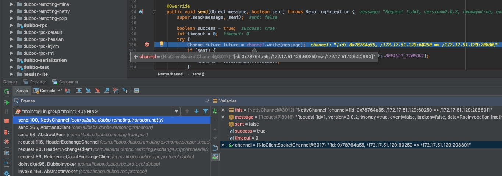

<!DOCTYPE html>
<!--[if IE 8]><html class="no-js lt-ie9" lang="en" > <![endif]-->
<!--[if gt IE 8]><!--> <html class="no-js" lang="en" > <!--<![endif]-->
<head>
  <meta charset="utf-8">
  <meta http-equiv="X-UA-Compatible" content="IE=edge">
  <meta name="viewport" content="width=device-width, initial-scale=1.0">
  
  
  <link rel="shortcut icon" href="../../img/favicon.ico">
  <title>Service invoking process - Dubbo 3.0.0</title>
  <link href='https://fonts.googleapis.com/css?family=Lato:400,700|Roboto+Slab:400,700|Inconsolata:400,700' rel='stylesheet' type='text/css'>

  <link rel="stylesheet" href="../../css/theme.css" type="text/css" />
  <link rel="stylesheet" href="../../css/theme_extra.css" type="text/css" />
  <link rel="stylesheet" href="//cdnjs.cloudflare.com/ajax/libs/highlight.js/9.12.0/styles/github.min.css">
  
  <script>
    // Current page data
    var mkdocs_page_name = "Service invoking process";
    var mkdocs_page_input_path = "source_code_guide/service-invoking-process.md";
    var mkdocs_page_url = null;
  </script>
  
  <script src="../../js/jquery-2.1.1.min.js" defer></script>
  <script src="../../js/modernizr-2.8.3.min.js" defer></script>
  <script src="//cdnjs.cloudflare.com/ajax/libs/highlight.js/9.12.0/highlight.min.js"></script>
  <script>hljs.initHighlightingOnLoad();</script> 
  
</head>

<body class="wy-body-for-nav" role="document">

  <div class="wy-grid-for-nav">

    
    <nav data-toggle="wy-nav-shift" class="wy-nav-side stickynav">
      <div class="wy-side-nav-search">
        <a href="../.." class="icon icon-home"> Dubbo 3.0.0</a>
        <div role="search">
  <form id ="rtd-search-form" class="wy-form" action="../../search.html" method="get">
    <input type="text" name="q" placeholder="Search docs" title="Type search term here" />
  </form>
</div>
      </div>

      <div class="wy-menu wy-menu-vertical" data-spy="affix" role="navigation" aria-label="main navigation">
	<ul class="current">
	  
          
            <li class="toctree-l1">
		
    <span class="caption-text">用户手册</span>
    <ul class="subnav">
                <li class="">
                    
    <span class="caption-text">入门</span>
    <ul class="subnav">
                <li class="toctree-l3">
                    
    <a class="" href="../../user/preface/background/">背景</a>
                </li>
                <li class="toctree-l3">
                    
    <a class="" href="../../user/preface/background/">需求</a>
                </li>
                <li class="toctree-l3">
                    
    <a class="" href="../../user/preface/architecture/">架构</a>
                </li>
                <li class="toctree-l3">
                    
    <a class="" href="../../user/preface/usage/">用法</a>
                </li>
    </ul>
                </li>
                <li class="">
                    
    <a class="" href="../../user/quick-start/">快速启动</a>
                </li>
                <li class="">
                    
    <a class="" href="../../user/dependencies/">依赖</a>
                </li>
                <li class="">
                    
    <a class="" href="../../user/maturity/">成熟度</a>
                </li>
                <li class="">
                    
    <span class="caption-text">配置</span>
    <ul class="subnav">
                <li class="toctree-l3">
                    
    <a class="" href="../../user/configuration/xml/">XML 配置</a>
                </li>
                <li class="toctree-l3">
                    
    <a class="" href="../../user/configuration/api/">API 配置</a>
                </li>
                <li class="toctree-l3">
                    
    <a class="" href="../../user/configuration/annotation/">Annotation 配置</a>
                </li>
                <li class="toctree-l3">
                    
    <a class="" href="../../user/configuration/annotation/">动态配置中心</a>
                </li>
                <li class="toctree-l3">
                    
    <a class="" href="../../user/configuration/configuration-load-process/">配置加载流程</a>
                </li>
                <li class="toctree-l3">
                    
    <a class="" href="../../user/configuration/environment-variables/">自动加载环境变量</a>
                </li>
    </ul>
                </li>
                <li class="">
                    
    <span class="caption-text">示例</span>
    <ul class="subnav">
                <li class="toctree-l3">
                    
    <a class="" href="../../user/demos/preflight-check/">启动时检查</a>
                </li>
                <li class="toctree-l3">
                    
    <a class="" href="../../user/demos/fault-tolerent-strategy/">集群容错</a>
                </li>
                <li class="toctree-l3">
                    
    <a class="" href="../../user/demos/loadbalance/">负载均衡</a>
                </li>
                <li class="toctree-l3">
                    
    <a class="" href="../../user/demos/thread-model/">线程模型</a>
                </li>
                <li class="toctree-l3">
                    
    <a class="" href="../../user/demos/explicit-target/">直连提供者</a>
                </li>
                <li class="toctree-l3">
                    
    <a class="" href="../../user/demos/subscribe-only/">只订阅</a>
                </li>
                <li class="toctree-l3">
                    
    <a class="" href="../../user/demos/registry-only/">只注册</a>
                </li>
                <li class="toctree-l3">
                    
    <a class="" href="../../user/demos/static-service/">静态服务</a>
                </li>
                <li class="toctree-l3">
                    
    <a class="" href="../../user/demos/multi-protocols/">多协议</a>
                </li>
                <li class="toctree-l3">
                    
    <a class="" href="../../user/demos/multi-registry/">多注册中心</a>
                </li>
                <li class="toctree-l3">
                    
    <a class="" href="../../user/demos/service-group/">服务分组</a>
                </li>
                <li class="toctree-l3">
                    
    <a class="" href="../../user/demos/multi-versions/">多版本</a>
                </li>
                <li class="toctree-l3">
                    
    <a class="" href="../../user/demos/group-merger/">分组聚合</a>
                </li>
                <li class="toctree-l3">
                    
    <a class="" href="../../user/demos/parameter-validation/">参数验证</a>
                </li>
                <li class="toctree-l3">
                    
    <a class="" href="../../user/demos/result-cache/">结果缓存</a>
                </li>
                <li class="toctree-l3">
                    
    <a class="" href="../../user/demos/generic-reference/">泛化引用</a>
                </li>
                <li class="toctree-l3">
                    
    <a class="" href="../../user/demos/generic-service/">泛化实现</a>
                </li>
                <li class="toctree-l3">
                    
    <a class="" href="../../user/demos/echo-service/">回声测试</a>
                </li>
                <li class="toctree-l3">
                    
    <a class="" href="../../user/demos/context/">上下文信息</a>
                </li>
                <li class="toctree-l3">
                    
    <a class="" href="../../user/demos/attachment/">隐式参数</a>
                </li>
                <li class="toctree-l3">
                    
    <a class="" href="../../user/demos/async-call/">异步调用</a>
                </li>
                <li class="toctree-l3">
                    
    <a class="" href="../../user/demos/async-execute-on-provider/">服务端异步</a>
                </li>
                <li class="toctree-l3">
                    
    <a class="" href="../../user/demos/local-call/">本地调用</a>
                </li>
                <li class="toctree-l3">
                    
    <a class="" href="../../user/demos/callback-parameter/">参数回调</a>
                </li>
                <li class="toctree-l3">
                    
    <a class="" href="../../user/demos/events-notify/">事件通知</a>
                </li>
                <li class="toctree-l3">
                    
    <a class="" href="../../user/demos/local-stub/">本地存根</a>
                </li>
                <li class="toctree-l3">
                    
    <a class="" href="../../user/demos/local-mock/">本地伪装</a>
                </li>
                <li class="toctree-l3">
                    
    <a class="" href="../../user/demos/delay-publish/">延迟暴露</a>
                </li>
                <li class="toctree-l3">
                    
    <a class="" href="../../user/demos/concurrency-control/">并发控制</a>
                </li>
                <li class="toctree-l3">
                    
    <a class="" href="../../user/demos/config-connection.md">连接控制</a>
                </li>
                <li class="toctree-l3">
                    
    <a class="" href="../../user/demos/lazy-connect/">延迟连接</a>
                </li>
                <li class="toctree-l3">
                    
    <a class="" href="../../user/demos/stickiness/">粘滞连接</a>
                </li>
                <li class="toctree-l3">
                    
    <a class="" href="../../user/demos/token-authorization/">令牌验证</a>
                </li>
                <li class="toctree-l3">
                    
    <a class="" href="../../user/demos/routing-rule/">路由规则</a>
                </li>
                <li class="toctree-l3">
                    
    <a class="" href="../../user/demos/config-rule/">配置规则</a>
                </li>
                <li class="toctree-l3">
                    
    <a class="" href="../../user/demos/service-downgrade/">服务降级</a>
                </li>
                <li class="toctree-l3">
                    
    <a class="" href="../../user/demos/graceful-shutdown/">优雅停机</a>
                </li>
                <li class="toctree-l3">
                    
    <a class="" href="../../user/demos/hostname-binding/">主机绑定</a>
                </li>
                <li class="toctree-l3">
                    
    <a class="" href="../../user/demos/logger-strategy/">日志适配</a>
                </li>
                <li class="toctree-l3">
                    
    <a class="" href="../../user/demos/accesslog/">访问日志</a>
                </li>
                <li class="toctree-l3">
                    
    <a class="" href="../../user/demos/service-container/">服务容器</a>
                </li>
                <li class="toctree-l3">
                    
    <a class="" href="../../user/demos/distributed-transaction/">分布式事务</a>
                </li>
                <li class="toctree-l3">
                    
    <a class="" href="../../user/demos/dump/">线程栈自动dump</a>
                </li>
                <li class="toctree-l3">
                    
    <a class="" href="../../user/demos/netty4/">Netty4</a>
                </li>
                <li class="toctree-l3">
                    
    <a class="" href="../../user/demos/serialization/">Kryo和FST序列化</a>
                </li>
                <li class="toctree-l3">
                    
    <a class="" href="../../user/demos/simplify-registry-data/">简化注册中心URL</a>
                </li>
                <li class="toctree-l3">
                    
    <a class="" href="../../user/demos/api.md">API 参考手册</a>
                </li>
    </ul>
                </li>
                <li class="">
                    
    <span class="caption-text">schema 配置参考手册</span>
    <ul class="subnav">
                <li class="toctree-l3">
                    
    <a class="" href="../../user/references/xml/dubbo-service/">dubbo:service</a>
                </li>
                <li class="toctree-l3">
                    
    <a class="" href="../../user/references/xml/dubbo-reference/">dubbo:reference</a>
                </li>
                <li class="toctree-l3">
                    
    <a class="" href="../../user/references/xml/dubbo-protocol/">dubbo:protocol</a>
                </li>
                <li class="toctree-l3">
                    
    <a class="" href="../../user/references/xml/dubbo-registry/">dubbo:registry</a>
                </li>
                <li class="toctree-l3">
                    
    <a class="" href="../../user/references/xml/dubbo-monitor/">dubbo:monitor</a>
                </li>
                <li class="toctree-l3">
                    
    <a class="" href="../../user/references/xml/dubbo-application/">dubbo:application</a>
                </li>
                <li class="toctree-l3">
                    
    <a class="" href="../../user/references/xml/dubbo-module/">dubbo:module</a>
                </li>
                <li class="toctree-l3">
                    
    <a class="" href="../../user/references/xml/dubbo-provider/">dubbo:provider</a>
                </li>
                <li class="toctree-l3">
                    
    <a class="" href="../../user/references/xml/dubbo-consumer/">dubbo:consumer</a>
                </li>
                <li class="toctree-l3">
                    
    <a class="" href="../../user/references/xml/dubbo-method/">dubbo:method</a>
                </li>
                <li class="toctree-l3">
                    
    <a class="" href="../../user/references/xml/dubbo-argument/">dubbo:argument</a>
                </li>
                <li class="toctree-l3">
                    
    <a class="" href="../../user/references/xml/dubbo-parameter/">dubbo:parameter</a>
                </li>
                <li class="toctree-l3">
                    
    <a class="" href="../../user/references/xml/dubbo-config-center/">dubbo:config-center</a>
                </li>
    </ul>
                </li>
                <li class="">
                    
    <span class="caption-text">协议参考手册</span>
    <ul class="subnav">
                <li class="toctree-l3">
                    
    <a class="" href="../../user/references/protocol/dubbo/">dubbo://</a>
                </li>
                <li class="toctree-l3">
                    
    <a class="" href="../../user/references/protocol/rmi/">rmi://</a>
                </li>
                <li class="toctree-l3">
                    
    <a class="" href="../../user/references/protocol/hessian/">hessian://</a>
                </li>
                <li class="toctree-l3">
                    
    <a class="" href="../../user/references/protocol/http/">http://</a>
                </li>
                <li class="toctree-l3">
                    
    <a class="" href="../../user/references/protocol/thrift/">thrift://</a>
                </li>
                <li class="toctree-l3">
                    
    <a class="" href="../../user/references/protocol/rest/">rest://</a>
                </li>
    </ul>
                </li>
                <li class="">
                    
    <span class="caption-text">注册中心参考手册</span>
    <ul class="subnav">
                <li class="toctree-l3">
                    
    <a class="" href="../../user/references/registry/multicast/">Multicast 注册中心</a>
                </li>
                <li class="toctree-l3">
                    
    <a class="" href="../../user/references/registry/zookeeper/">Zookeeper 注册中心</a>
                </li>
                <li class="toctree-l3">
                    
    <a class="" href="../../user/references/registry/redis/">Redis 注册中心</a>
                </li>
                <li class="toctree-l3">
                    
    <a class="" href="../../user/references/registry/simple/">Simple 注册中心</a>
                </li>
    </ul>
                </li>
                <li class="">
                    
    <span class="caption-text">元数据中心参考手册</span>
    <ul class="subnav">
                <li class="toctree-l3">
                    
    <a class="" href="../../user/references/metadata/metadata-redis/">Redis 元数据中心</a>
                </li>
                <li class="toctree-l3">
                    
    <a class="" href="../../user/references/metadata/metadata-zookeeper/">Zookeeper 元数据中心</a>
                </li>
    </ul>
                </li>
                <li class="">
                    
    <a class="" href="../../user/references/telnet/">telnet 命令参考手册</a>
                </li>
                <li class="">
                    
    <a class="" href="../../user/references/qos/">在线运维命令-QOS</a>
                </li>
                <li class="">
                    
    <a class="" href="../../user/references/maven/">maven 插件参考手册</a>
                </li>
                <li class="">
                    
    <a class="" href="../../user/best-practice/">服务化最佳实践</a>
                </li>
                <li class="">
                    
    <a class="" href="../../user/recommend/">推荐用法</a>
                </li>
                <li class="">
                    
    <a class="" href="../../user/capacity-plan/">容量规划</a>
                </li>
                <li class="">
                    
    <a class="" href="../../user/perf-test/">性能测试报告</a>
                </li>
                <li class="">
                    
    <a class="" href="../../user/covergence.md">测试覆盖率报告</a>
                </li>
                <li class="">
                    
    <span class="caption-text">版本与升级</span>
    <ul class="subnav">
                <li class="toctree-l3">
                    
    <a class="" href="../../user/version-270.md">2.7.x升级步骤及注意事项</a>
                </li>
    </ul>
                </li>
    </ul>
	    </li>
          
            <li class="toctree-l1">
		
    <span class="caption-text">开发手册</span>
    <ul class="subnav">
                <li class="">
                    
    <a class="" href="../../dev/build/">源码构建</a>
                </li>
                <li class="">
                    
    <a class="" href="../../dev/design/">框架设计</a>
                </li>
                <li class="">
                    
    <a class="" href="../../dev/SPI/">扩展点加载</a>
                </li>
                <li class="">
                    
    <a class="" href="../../dev/implementation/">实现细节</a>
                </li>
                <li class="">
                    
    <span class="caption-text">SPI 扩展实现</span>
    <ul class="subnav">
                <li class="toctree-l3">
                    
    <a class="" href="../../dev/impls/protocol/">协议扩展</a>
                </li>
                <li class="toctree-l3">
                    
    <a class="" href="../../dev/impls/filter/">调用拦截扩展</a>
                </li>
                <li class="toctree-l3">
                    
    <a class="" href="../../dev/impls/invoker-listener/">引用监听扩展</a>
                </li>
                <li class="toctree-l3">
                    
    <a class="" href="../../dev/impls/exporter-listener/">暴露监听扩展</a>
                </li>
                <li class="toctree-l3">
                    
    <a class="" href="../../dev/impls/cluster/">集群扩展</a>
                </li>
                <li class="toctree-l3">
                    
    <a class="" href="../../dev/impls/router/">路由扩展</a>
                </li>
                <li class="toctree-l3">
                    
    <a class="" href="../../dev/impls/load-balance/">负载均衡扩展</a>
                </li>
                <li class="toctree-l3">
                    
    <a class="" href="../../dev/impls/merger/">合并结果扩展</a>
                </li>
                <li class="toctree-l3">
                    
    <a class="" href="../../dev/impls/registry/">注册中心扩展</a>
                </li>
                <li class="toctree-l3">
                    
    <a class="" href="../../dev/impls/monitor/">监控中心扩展</a>
                </li>
                <li class="toctree-l3">
                    
    <a class="" href="../../dev/impls/extension-factory/">扩展点加载扩展</a>
                </li>
                <li class="toctree-l3">
                    
    <a class="" href="../../dev/impls/proxy-factory/">动态代理扩展</a>
                </li>
                <li class="toctree-l3">
                    
    <a class="" href="../../dev/impls/compiler/">编译器扩展</a>
                </li>
                <li class="toctree-l3">
                    
    <a class="" href="../../dev/impls/dispatcher/">消息派发扩展</a>
                </li>
                <li class="toctree-l3">
                    
    <a class="" href="../../dev/impls/threadpool/">线程池扩展</a>
                </li>
                <li class="toctree-l3">
                    
    <a class="" href="../../dev/impls/serialize/">序列化扩展</a>
                </li>
                <li class="toctree-l3">
                    
    <a class="" href="../../dev/impls/remoting/">网络传输扩展</a>
                </li>
                <li class="toctree-l3">
                    
    <a class="" href="../../dev/impls/exchanger/">信息交换扩展</a>
                </li>
                <li class="toctree-l3">
                    
    <a class="" href="../../dev/impls/networker/">组网扩展</a>
                </li>
                <li class="toctree-l3">
                    
    <a class="" href="../../dev/impls/telnet-handler/">Telnet 命令扩展</a>
                </li>
                <li class="toctree-l3">
                    
    <a class="" href="../../dev/impls/status-checker/">状态检查扩展</a>
                </li>
                <li class="toctree-l3">
                    
    <a class="" href="../../dev/impls/container/">容器扩展</a>
                </li>
                <li class="toctree-l3">
                    
    <a class="" href="../../dev/impls/page/">页面扩展</a>
                </li>
                <li class="toctree-l3">
                    
    <a class="" href="../../dev/impls/cache/">缓存扩展</a>
                </li>
                <li class="toctree-l3">
                    
    <a class="" href="../../dev/impls/validation/">验证扩展</a>
                </li>
                <li class="toctree-l3">
                    
    <a class="" href="../../dev/impls/logger-adapter/">日志适配扩展</a>
                </li>
                <li class="toctree-l3">
                    
    <a class="" href="../../dev/impls/config-center/">配置中心</a>
                </li>
    </ul>
                </li>
                <li class="">
                    
    <a class="" href="../../dev/contract/">公共契约</a>
                </li>
                <li class="">
                    
    <a class="" href="../../dev/coding/">编码约定</a>
                </li>
                <li class="">
                    
    <span class="caption-text">设计原则</span>
    <ul class="subnav">
                <li class="toctree-l3">
                    
    <a class="" href="../../dev/principals/code-detail/">魔鬼在细节</a>
                </li>
                <li class="toctree-l3">
                    
    <a class="" href="../../dev/principals/general-knowledge/">一些设计上的基本常识</a>
                </li>
                <li class="toctree-l3">
                    
    <a class="" href="../../dev/principals/expansibility/">谈谈扩充式扩展与增量式扩展</a>
                </li>
                <li class="toctree-l3">
                    
    <a class="" href="../../dev/principals/configuration/">配置设计</a>
                </li>
                <li class="toctree-l3">
                    
    <a class="" href="../../dev/principals/robustness/">设计实现的健壮性</a>
                </li>
                <li class="toctree-l3">
                    
    <a class="" href="../../dev/principals/dummy/">防痴呆设计</a>
                </li>
                <li class="toctree-l3">
                    
    <a class="" href="../../dev/principals/extension/">扩展点重构</a>
                </li>
    </ul>
                </li>
                <li class="">
                    
    <a class="" href="../../dev/release/">版本发布</a>
                </li>
                <li class="">
                    
    <a class="" href="../../dev/contribution/">贡献代码</a>
                </li>
                <li class="">
                    
    <a class="" href="../../dev/checklist/">检查列表</a>
                </li>
                <li class="">
                    
    <a class="" href="../../dev/code-smell/">坏味道</a>
                </li>
                <li class="">
                    
    <a class="" href="../../dev/TCK/">兼容性测试</a>
                </li>
    </ul>
	    </li>
          
            <li class="toctree-l1">
		
    <span class="caption-text">管理者文档</span>
    <ul class="subnav">
                <li class="">
                    
    <a class="" href="../../admin/introduction/">Dubbo Admin介绍</a>
                </li>
                <li class="">
                    
    <a class="" href="../../admin/serviceSearch/">服务搜索和详情</a>
                </li>
                <li class="">
                    
    <a class="" href="../../admin/serviceGovernance/">服务治理</a>
                </li>
                <li class="">
                    
    <a class="" href="../../admin/serviceTest/">服务测试</a>
                </li>
    </ul>
	    </li>
          
        </ul>
      </div>
      &nbsp;
    </nav>

    <section data-toggle="wy-nav-shift" class="wy-nav-content-wrap">

      
      <nav class="wy-nav-top" role="navigation" aria-label="top navigation">
        <i data-toggle="wy-nav-top" class="fa fa-bars"></i>
        <a href="../..">Dubbo 3.0.0</a>
      </nav>

      
      <div class="wy-nav-content">
        <div class="rst-content">
          <div role="navigation" aria-label="breadcrumbs navigation">
  <ul class="wy-breadcrumbs">
    <li><a href="../..">Docs</a> &raquo;</li>
    
      
    
    <li>Service invoking process</li>
    <li class="wy-breadcrumbs-aside">
      
        <a href="https://github.com/apache/dubbo-website/edit/master/documentations/3.0/zh-cn/docs/source_code_guide/service-invoking-process.md"
          class="icon icon-github"> Edit on GitHub</a>
      
    </li>
  </ul>
  <hr/>
</div>
          <div role="main">
            <div class="section">
              
                <hr />
<p>title: 服务调用过程
keywords: Dubbo, Service
description: 本文介绍了服务调用过程的原理和实现细节</p>
<hr />
<h2 id="1">1. 简介</h2>
<p>在前面的文章中，我们分析了 Dubbo SPI、服务导出与引入、以及集群容错方面的代码。经过前文的铺垫，本篇文章我们终于可以分析服务调用过程了。Dubbo 服务调用过程比较复杂，包含众多步骤，比如发送请求、编解码、服务降级、过滤器链处理、序列化、线程派发以及响应请求等步骤。限于篇幅原因，本篇文章无法对所有的步骤一一进行分析。本篇文章将会重点分析请求的发送与接收、编解码、线程派发以及响应的发送与接收等过程，至于服务降级、过滤器链和序列化大家自行进行分析，也可以将其当成一个黑盒，暂时忽略也没关系。介绍完本篇文章要分析的内容，接下来我们进入正题吧。</p>
<h2 id="2">2. 源码分析</h2>
<p>在进行源码分析之前，我们先来通过一张图了解 Dubbo 服务调用过程。</p>
<p></p>
<p>首先服务消费者通过代理对象 Proxy 发起远程调用，接着通过网络客户端 Client 将编码后的请求发送给服务提供方的网络层上，也就是 Server。Server 在收到请求后，首先要做的事情是对数据包进行解码。然后将解码后的请求发送至分发器 Dispatcher，再由分发器将请求派发到指定的线程池上，最后由线程池调用具体的服务。这就是一个远程调用请求的发送与接收过程。至于响应的发送与接收过程，这张图中没有表现出来。对于这两个过程，我们也会进行详细分析。</p>
<h3 id="21">2.1 服务调用方式</h3>
<p>Dubbo 支持同步和异步两种调用方式，其中异步调用还可细分为“有返回值”的异步调用和“无返回值”的异步调用。所谓“无返回值”异步调用是指服务消费方只管调用，但不关心调用结果，此时 Dubbo 会直接返回一个空的 RpcResult。若要使用异步特性，需要服务消费方手动进行配置。默认情况下，Dubbo 使用同步调用方式。</p>
<p>本节以及其他章节将会使用 Dubbo 官方提供的 Demo 分析整个调用过程，下面我们从 DemoService 接口的代理类开始进行分析。Dubbo 默认使用 Javassist 框架为服务接口生成动态代理类，因此我们需要先将代理类进行反编译才能看到源码。这里使用阿里开源 Java 应用诊断工具 <a href="https://github.com/alibaba/arthas">Arthas</a> 反编译代理类，结果如下：</p>
<pre><code class="java">/**
 * Arthas 反编译步骤：
 * 1. 启动 Arthas
 *    java -jar arthas-boot.jar
 *
 * 2. 输入编号选择进程
 *    Arthas 启动后，会打印 Java 应用进程列表，如下：
 *    [1]: 11232 org.jetbrains.jps.cmdline.Launcher
 *    [2]: 22370 org.jetbrains.jps.cmdline.Launcher
 *    [3]: 22371 com.alibaba.dubbo.demo.consumer.Consumer
 *    [4]: 22362 com.alibaba.dubbo.demo.provider.Provider
 *    [5]: 2074 org.apache.zookeeper.server.quorum.QuorumPeerMain
 * 这里输入编号 3，让 Arthas 关联到启动类为 com.....Consumer 的 Java 进程上
 *
 * 3. 由于 Demo 项目中只有一个服务接口，因此此接口的代理类类名为 proxy0，此时使用 sc 命令搜索这个类名。
 *    $ sc *.proxy0
 *    com.alibaba.dubbo.common.bytecode.proxy0
 *
 * 4. 使用 jad 命令反编译 com.alibaba.dubbo.common.bytecode.proxy0
 *    $ jad com.alibaba.dubbo.common.bytecode.proxy0
 *
 * 更多使用方法请参考 Arthas 官方文档：
 *   https://alibaba.github.io/arthas/quick-start.html
 */
public class proxy0 implements ClassGenerator.DC, EchoService, DemoService {
    // 方法数组
    public static Method[] methods;
    private InvocationHandler handler;

    public proxy0(InvocationHandler invocationHandler) {
        this.handler = invocationHandler;
    }

    public proxy0() {
    }

    public String sayHello(String string) {
        // 将参数存储到 Object 数组中
        Object[] arrobject = new Object[]{string};
        // 调用 InvocationHandler 实现类的 invoke 方法得到调用结果
        Object object = this.handler.invoke(this, methods[0], arrobject);
        // 返回调用结果
        return (String)object;
    }

    /** 回声测试方法 */
    public Object $echo(Object object) {
        Object[] arrobject = new Object[]{object};
        Object object2 = this.handler.invoke(this, methods[1], arrobject);
        return object2;
    }
}
</code></pre>

<p>如上，代理类的逻辑比较简单。首先将运行时参数存储到数组中，然后调用 InvocationHandler 接口实现类的 invoke 方法，得到调用结果，最后将结果转型并返回给调用方。关于代理类的逻辑就说这么多，继续向下分析。</p>
<pre><code class="java">public class InvokerInvocationHandler implements InvocationHandler {

    private final Invoker&lt;?&gt; invoker;

    public InvokerInvocationHandler(Invoker&lt;?&gt; handler) {
        this.invoker = handler;
    }

    @Override
    public Object invoke(Object proxy, Method method, Object[] args) throws Throwable {
        String methodName = method.getName();
        Class&lt;?&gt;[] parameterTypes = method.getParameterTypes();

        // 拦截定义在 Object 类中的方法（未被子类重写），比如 wait/notify
        if (method.getDeclaringClass() == Object.class) {
            return method.invoke(invoker, args);
        }

        // 如果 toString、hashCode 和 equals 等方法被子类重写了，这里也直接调用
        if (&quot;toString&quot;.equals(methodName) &amp;&amp; parameterTypes.length == 0) {
            return invoker.toString();
        }
        if (&quot;hashCode&quot;.equals(methodName) &amp;&amp; parameterTypes.length == 0) {
            return invoker.hashCode();
        }
        if (&quot;equals&quot;.equals(methodName) &amp;&amp; parameterTypes.length == 1) {
            return invoker.equals(args[0]);
        }

        // 将 method 和 args 封装到 RpcInvocation 中，并执行后续的调用
        return invoker.invoke(new RpcInvocation(method, args)).recreate();
    }
}
</code></pre>

<p>InvokerInvocationHandler 中的 invoker 成员变量类型为 MockClusterInvoker，MockClusterInvoker 内部封装了服务降级逻辑。下面简单看一下：</p>
<pre><code class="java">public class MockClusterInvoker&lt;T&gt; implements Invoker&lt;T&gt; {

    private final Invoker&lt;T&gt; invoker;

    public Result invoke(Invocation invocation) throws RpcException {
        Result result = null;

        // 获取 mock 配置值
        String value = directory.getUrl().getMethodParameter(invocation.getMethodName(), Constants.MOCK_KEY, Boolean.FALSE.toString()).trim();
        if (value.length() == 0 || value.equalsIgnoreCase(&quot;false&quot;)) {
            // 无 mock 逻辑，直接调用其他 Invoker 对象的 invoke 方法，
            // 比如 FailoverClusterInvoker
            result = this.invoker.invoke(invocation);
        } else if (value.startsWith(&quot;force&quot;)) {
            // force:xxx 直接执行 mock 逻辑，不发起远程调用
            result = doMockInvoke(invocation, null);
        } else {
            // fail:xxx 表示消费方对调用服务失败后，再执行 mock 逻辑，不抛出异常
            try {
                // 调用其他 Invoker 对象的 invoke 方法
                result = this.invoker.invoke(invocation);
            } catch (RpcException e) {
                if (e.isBiz()) {
                    throw e;
                } else {
                    // 调用失败，执行 mock 逻辑
                    result = doMockInvoke(invocation, e);
                }
            }
        }
        return result;
    }

    // 省略其他方法
}
</code></pre>

<p>服务降级不是本文重点，因此这里就不分析 doMockInvoke 方法了。考虑到前文已经详细分析过 FailoverClusterInvoker，因此本节略过 FailoverClusterInvoker，直接分析 DubboInvoker。</p>
<pre><code class="java">public abstract class AbstractInvoker&lt;T&gt; implements Invoker&lt;T&gt; {

    public Result invoke(Invocation inv) throws RpcException {
        if (destroyed.get()) {
            throw new RpcException(&quot;Rpc invoker for service ...&quot;);
        }
        RpcInvocation invocation = (RpcInvocation) inv;
        // 设置 Invoker
        invocation.setInvoker(this);
        if (attachment != null &amp;&amp; attachment.size() &gt; 0) {
            // 设置 attachment
            invocation.addAttachmentsIfAbsent(attachment);
        }
        Map&lt;String, String&gt; contextAttachments = RpcContext.getContext().getAttachments();
        if (contextAttachments != null &amp;&amp; contextAttachments.size() != 0) {
            // 添加 contextAttachments 到 RpcInvocation#attachment 变量中
            invocation.addAttachments(contextAttachments);
        }
        if (getUrl().getMethodParameter(invocation.getMethodName(), Constants.ASYNC_KEY, false)) {
            // 设置异步信息到 RpcInvocation#attachment 中
            invocation.setAttachment(Constants.ASYNC_KEY, Boolean.TRUE.toString());
        }
        RpcUtils.attachInvocationIdIfAsync(getUrl(), invocation);

        try {
            // 抽象方法，由子类实现
            return doInvoke(invocation);
        } catch (InvocationTargetException e) {
            // ...
        } catch (RpcException e) {
            // ...
        } catch (Throwable e) {
            return new RpcResult(e);
        }
    }

    protected abstract Result doInvoke(Invocation invocation) throws Throwable;

    // 省略其他方法
}
</code></pre>

<p>上面的代码来自 AbstractInvoker 类，其中大部分代码用于添加信息到 RpcInvocation#attachment 变量中，添加完毕后，调用 doInvoke 执行后续的调用。doInvoke 是一个抽象方法，需要由子类实现，下面到 DubboInvoker 中看一下。</p>
<pre><code class="java">public class DubboInvoker&lt;T&gt; extends AbstractInvoker&lt;T&gt; {

    private final ExchangeClient[] clients;

    protected Result doInvoke(final Invocation invocation) throws Throwable {
        RpcInvocation inv = (RpcInvocation) invocation;
        final String methodName = RpcUtils.getMethodName(invocation);
        // 设置 path 和 version 到 attachment 中
        inv.setAttachment(Constants.PATH_KEY, getUrl().getPath());
        inv.setAttachment(Constants.VERSION_KEY, version);

        ExchangeClient currentClient;
        if (clients.length == 1) {
            // 从 clients 数组中获取 ExchangeClient
            currentClient = clients[0];
        } else {
            currentClient = clients[index.getAndIncrement() % clients.length];
        }
        try {
            // 获取异步配置
            boolean isAsync = RpcUtils.isAsync(getUrl(), invocation);
            // isOneway 为 true，表示“单向”通信
            boolean isOneway = RpcUtils.isOneway(getUrl(), invocation);
            int timeout = getUrl().getMethodParameter(methodName, Constants.TIMEOUT_KEY, Constants.DEFAULT_TIMEOUT);

            // 异步无返回值
            if (isOneway) {
                boolean isSent = getUrl().getMethodParameter(methodName, Constants.SENT_KEY, false);
                // 发送请求
                currentClient.send(inv, isSent);
                // 设置上下文中的 future 字段为 null
                RpcContext.getContext().setFuture(null);
                // 返回一个空的 RpcResult
                return new RpcResult();
            } 

            // 异步有返回值
            else if (isAsync) {
                // 发送请求，并得到一个 ResponseFuture 实例
                ResponseFuture future = currentClient.request(inv, timeout);
                // 设置 future 到上下文中
                RpcContext.getContext().setFuture(new FutureAdapter&lt;Object&gt;(future));
                // 暂时返回一个空结果
                return new RpcResult();
            } 

            // 同步调用
            else {
                RpcContext.getContext().setFuture(null);
                // 发送请求，得到一个 ResponseFuture 实例，并调用该实例的 get 方法进行等待
                return (Result) currentClient.request(inv, timeout).get();
            }
        } catch (TimeoutException e) {
            throw new RpcException(..., &quot;Invoke remote method timeout....&quot;);
        } catch (RemotingException e) {
            throw new RpcException(..., &quot;Failed to invoke remote method: ...&quot;);
        }
    }

    // 省略其他方法
}
</code></pre>

<p>上面的代码包含了 Dubbo 对同步和异步调用的处理逻辑，搞懂了上面的代码，会对 Dubbo 的同步和异步调用方式有更深入的了解。Dubbo 实现同步和异步调用比较关键的一点就在于由谁调用 ResponseFuture 的 get 方法。同步调用模式下，由框架自身调用 ResponseFuture 的 get 方法。异步调用模式下，则由用户调用该方法。ResponseFuture 是一个接口，下面我们来看一下它的默认实现类 DefaultFuture 的源码。</p>
<pre><code class="java">public class DefaultFuture implements ResponseFuture {

    private static final Map&lt;Long, Channel&gt; CHANNELS = 
        new ConcurrentHashMap&lt;Long, Channel&gt;();

    private static final Map&lt;Long, DefaultFuture&gt; FUTURES = 
        new ConcurrentHashMap&lt;Long, DefaultFuture&gt;();

    private final long id;
    private final Channel channel;
    private final Request request;
    private final int timeout;
    private final Lock lock = new ReentrantLock();
    private final Condition done = lock.newCondition();
    private volatile Response response;

    public DefaultFuture(Channel channel, Request request, int timeout) {
        this.channel = channel;
        this.request = request;

        // 获取请求 id，这个 id 很重要，后面还会见到
        this.id = request.getId();
        this.timeout = timeout &gt; 0 ? timeout : channel.getUrl().getPositiveParameter(Constants.TIMEOUT_KEY, Constants.DEFAULT_TIMEOUT);
        // 存储 &lt;requestId, DefaultFuture&gt; 映射关系到 FUTURES 中
        FUTURES.put(id, this);
        CHANNELS.put(id, channel);
    }

    @Override
    public Object get() throws RemotingException {
        return get(timeout);
    }

    @Override
    public Object get(int timeout) throws RemotingException {
        if (timeout &lt;= 0) {
            timeout = Constants.DEFAULT_TIMEOUT;
        }

        // 检测服务提供方是否成功返回了调用结果
        if (!isDone()) {
            long start = System.currentTimeMillis();
            lock.lock();
            try {
                // 循环检测服务提供方是否成功返回了调用结果
                while (!isDone()) {
                    // 如果调用结果尚未返回，这里等待一段时间
                    done.await(timeout, TimeUnit.MILLISECONDS);
                    // 如果调用结果成功返回，或等待超时，此时跳出 while 循环，执行后续的逻辑
                    if (isDone() || System.currentTimeMillis() - start &gt; timeout) {
                        break;
                    }
                }
            } catch (InterruptedException e) {
                throw new RuntimeException(e);
            } finally {
                lock.unlock();
            }

            // 如果调用结果仍未返回，则抛出超时异常
            if (!isDone()) {
                throw new TimeoutException(sent &gt; 0, channel, getTimeoutMessage(false));
            }
        }

        // 返回调用结果
        return returnFromResponse();
    }

    @Override
    public boolean isDone() {
        // 通过检测 response 字段为空与否，判断是否收到了调用结果
        return response != null;
    }

    private Object returnFromResponse() throws RemotingException {
        Response res = response;
        if (res == null) {
            throw new IllegalStateException(&quot;response cannot be null&quot;);
        }

        // 如果调用结果的状态为 Response.OK，则表示调用过程正常，服务提供方成功返回了调用结果
        if (res.getStatus() == Response.OK) {
            return res.getResult();
        }

        // 抛出异常
        if (res.getStatus() == Response.CLIENT_TIMEOUT || res.getStatus() == Response.SERVER_TIMEOUT) {
            throw new TimeoutException(res.getStatus() == Response.SERVER_TIMEOUT, channel, res.getErrorMessage());
        }
        throw new RemotingException(channel, res.getErrorMessage());
    }

    // 省略其他方法
}
</code></pre>

<p>如上，当服务消费者还未接收到调用结果时，用户线程调用 get 方法会被阻塞住。同步调用模式下，框架获得 DefaultFuture 对象后，会立即调用 get 方法进行等待。而异步模式下则是将该对象封装到 FutureAdapter 实例中，并将 FutureAdapter 实例设置到 RpcContext 中，供用户使用。FutureAdapter 是一个适配器，用于将 Dubbo 中的 ResponseFuture 与 JDK 中的 Future 进行适配。这样当用户线程调用 Future 的 get 方法时，经过 FutureAdapter 适配，最终会调用 ResponseFuture 实现类对象的 get 方法，也就是 DefaultFuture 的 get 方法。</p>
<p>到这里关于 Dubbo 几种调用方式的代码逻辑就分析完了，下面来分析请求数据的发送与接收，以及响应数据的发送与接收过程。</p>
<h3 id="22">2.2 服务消费方发送请求</h3>
<h4 id="221">2.2.1 发送请求</h4>
<p>本节我们来看一下同步调用模式下，服务消费方是如何发送调用请求的。在深入分析源码前，我们先来看一张图。</p>
<p></p>
<p>这张图展示了服务消费方发送请求过程的部分调用栈，略为复杂。从上图可以看出，经过多次调用后，才将请求数据送至 Netty NioClientSocketChannel。这样做的原因是通过 Exchange 层为框架引入 Request 和 Response 语义，这一点会在接下来的源码分析过程中会看到。其他的就不多说了，下面开始进行分析。首先分析 ReferenceCountExchangeClient 的源码。</p>
<pre><code class="java">final class ReferenceCountExchangeClient implements ExchangeClient {

    private final URL url;
    private final AtomicInteger referenceCount = new AtomicInteger(0);

    public ReferenceCountExchangeClient(ExchangeClient client, ConcurrentMap&lt;String, LazyConnectExchangeClient&gt; ghostClientMap) {
        this.client = client;
        // 引用计数自增
        referenceCount.incrementAndGet();
        this.url = client.getUrl();

        // ...
    }

    @Override
    public ResponseFuture request(Object request) throws RemotingException {
        // 直接调用被装饰对象的同签名方法
        return client.request(request);
    }

    @Override
    public ResponseFuture request(Object request, int timeout) throws RemotingException {
        // 直接调用被装饰对象的同签名方法
        return client.request(request, timeout);
    }

    /** 引用计数自增，该方法由外部调用 */
    public void incrementAndGetCount() {
        // referenceCount 自增
        referenceCount.incrementAndGet();
    }

        @Override
    public void close(int timeout) {
        // referenceCount 自减
        if (referenceCount.decrementAndGet() &lt;= 0) {
            if (timeout == 0) {
                client.close();
            } else {
                client.close(timeout);
            }
            client = replaceWithLazyClient();
        }
    }

    // 省略部分方法
}
</code></pre>

<p>ReferenceCountExchangeClient 内部定义了一个引用计数变量 referenceCount，每当该对象被引用一次 referenceCount 都会进行自增。每当 close 方法被调用时，referenceCount 进行自减。ReferenceCountExchangeClient 内部仅实现了一个引用计数的功能，其他方法并无复杂逻辑，均是直接调用被装饰对象的相关方法。所以这里就不多说了，继续向下分析，这次是 HeaderExchangeClient。</p>
<pre><code class="java">public class HeaderExchangeClient implements ExchangeClient {

    private static final ScheduledThreadPoolExecutor scheduled = new ScheduledThreadPoolExecutor(2, new NamedThreadFactory(&quot;dubbo-remoting-client-heartbeat&quot;, true));
    private final Client client;
    private final ExchangeChannel channel;
    private ScheduledFuture&lt;?&gt; heartbeatTimer;
    private int heartbeat;
    private int heartbeatTimeout;

    public HeaderExchangeClient(Client client, boolean needHeartbeat) {
        if (client == null) {
            throw new IllegalArgumentException(&quot;client == null&quot;);
        }
        this.client = client;

        // 创建 HeaderExchangeChannel 对象
        this.channel = new HeaderExchangeChannel(client);

        // 以下代码均与心跳检测逻辑有关
        String dubbo = client.getUrl().getParameter(Constants.DUBBO_VERSION_KEY);
        this.heartbeat = client.getUrl().getParameter(Constants.HEARTBEAT_KEY, dubbo != null &amp;&amp; dubbo.startsWith(&quot;1.0.&quot;) ? Constants.DEFAULT_HEARTBEAT : 0);
        this.heartbeatTimeout = client.getUrl().getParameter(Constants.HEARTBEAT_TIMEOUT_KEY, heartbeat * 3);
        if (heartbeatTimeout &lt; heartbeat * 2) {
            throw new IllegalStateException(&quot;heartbeatTimeout &lt; heartbeatInterval * 2&quot;);
        }
        if (needHeartbeat) {
            // 开启心跳检测定时器
            startHeartbeatTimer();
        }
    }

    @Override
    public ResponseFuture request(Object request) throws RemotingException {
        // 直接 HeaderExchangeChannel 对象的同签名方法
        return channel.request(request);
    }

    @Override
    public ResponseFuture request(Object request, int timeout) throws RemotingException {
        // 直接 HeaderExchangeChannel 对象的同签名方法
        return channel.request(request, timeout);
    }

    @Override
    public void close() {
        doClose();
        channel.close();
    }

    private void doClose() {
        // 停止心跳检测定时器
        stopHeartbeatTimer();
    }

    private void startHeartbeatTimer() {
        stopHeartbeatTimer();
        if (heartbeat &gt; 0) {
            heartbeatTimer = scheduled.scheduleWithFixedDelay(
                    new HeartBeatTask(new HeartBeatTask.ChannelProvider() {
                        @Override
                        public Collection&lt;Channel&gt; getChannels() {
                            return Collections.&lt;Channel&gt;singletonList(HeaderExchangeClient.this);
                        }
                    }, heartbeat, heartbeatTimeout),
                    heartbeat, heartbeat, TimeUnit.MILLISECONDS);
        }
    }

    private void stopHeartbeatTimer() {
        if (heartbeatTimer != null &amp;&amp; !heartbeatTimer.isCancelled()) {
            try {
                heartbeatTimer.cancel(true);
                scheduled.purge();
            } catch (Throwable e) {
                if (logger.isWarnEnabled()) {
                    logger.warn(e.getMessage(), e);
                }
            }
        }
        heartbeatTimer = null;
    }

    // 省略部分方法
}
</code></pre>

<p>HeaderExchangeClient 中很多方法只有一行代码，即调用 HeaderExchangeChannel 对象的同签名方法。那 HeaderExchangeClient 有什么用处呢？答案是封装了一些关于心跳检测的逻辑。心跳检测并非本文所关注的点，因此就不多说了，继续向下看。</p>
<pre><code class="java">final class HeaderExchangeChannel implements ExchangeChannel {

    private final Channel channel;

    HeaderExchangeChannel(Channel channel) {
        if (channel == null) {
            throw new IllegalArgumentException(&quot;channel == null&quot;);
        }

        // 这里的 channel 指向的是 NettyClient
        this.channel = channel;
    }

    @Override
    public ResponseFuture request(Object request) throws RemotingException {
        return request(request, channel.getUrl().getPositiveParameter(Constants.TIMEOUT_KEY, Constants.DEFAULT_TIMEOUT));
    }

    @Override
    public ResponseFuture request(Object request, int timeout) throws RemotingException {
        if (closed) {
            throw new RemotingException(..., &quot;Failed to send request ...);
        }
        // 创建 Request 对象
        Request req = new Request();
        req.setVersion(Version.getProtocolVersion());
        // 设置双向通信标志为 true
        req.setTwoWay(true);
        // 这里的 request 变量类型为 RpcInvocation
        req.setData(request);

        // 创建 DefaultFuture 对象
        DefaultFuture future = new DefaultFuture(channel, req, timeout);
        try {
            // 调用 NettyClient 的 send 方法发送请求
            channel.send(req);
        } catch (RemotingException e) {
            future.cancel();
            throw e;
        }
        // 返回 DefaultFuture 对象
        return future;
    }
}
</code></pre>

<p>到这里大家终于看到了 Request 语义了，上面的方法首先定义了一个 Request 对象，然后再将该对象传给 NettyClient 的 send 方法，进行后续的调用。需要说明的是，NettyClient 中并未实现 send 方法，该方法继承自父类 AbstractPeer，下面直接分析 AbstractPeer 的代码。</p>
<pre><code class="java">public abstract class AbstractPeer implements Endpoint, ChannelHandler {

    @Override
    public void send(Object message) throws RemotingException {
        // 该方法由 AbstractClient 类实现
        send(message, url.getParameter(Constants.SENT_KEY, false));
    }

    // 省略其他方法
}

public abstract class AbstractClient extends AbstractEndpoint implements Client {

    @Override
    public void send(Object message, boolean sent) throws RemotingException {
        if (send_reconnect &amp;&amp; !isConnected()) {
            connect();
        }

        // 获取 Channel，getChannel 是一个抽象方法，具体由子类实现
        Channel channel = getChannel();
        if (channel == null || !channel.isConnected()) {
            throw new RemotingException(this, &quot;message can not send ...&quot;);
        }

        // 继续向下调用
        channel.send(message, sent);
    }

    protected abstract Channel getChannel();

    // 省略其他方法
}
</code></pre>

<p>默认情况下，Dubbo 使用 Netty 作为底层的通信框架，因此下面我们到 NettyClient 类中看一下 getChannel 方法的实现逻辑。</p>
<pre><code class="java">
public class NettyClient extends AbstractClient {

    // 这里的 Channel 全限定名称为 org.jboss.netty.channel.Channel
    private volatile Channel channel;

    @Override
    protected com.alibaba.dubbo.remoting.Channel getChannel() {
        Channel c = channel;
        if (c == null || !c.isConnected())
            return null;
        // 获取一个 NettyChannel 类型对象
        return NettyChannel.getOrAddChannel(c, getUrl(), this);
    }
}

final class NettyChannel extends AbstractChannel {

    private static final ConcurrentMap&lt;org.jboss.netty.channel.Channel, NettyChannel&gt; channelMap = 
        new ConcurrentHashMap&lt;org.jboss.netty.channel.Channel, NettyChannel&gt;();

    private final org.jboss.netty.channel.Channel channel;

    /** 私有构造方法 */
    private NettyChannel(org.jboss.netty.channel.Channel channel, URL url, ChannelHandler handler) {
        super(url, handler);
        if (channel == null) {
            throw new IllegalArgumentException(&quot;netty channel == null;&quot;);
        }
        this.channel = channel;
    }

    static NettyChannel getOrAddChannel(org.jboss.netty.channel.Channel ch, URL url, ChannelHandler handler) {
        if (ch == null) {
            return null;
        }

        // 尝试从集合中获取 NettyChannel 实例
        NettyChannel ret = channelMap.get(ch);
        if (ret == null) {
            // 如果 ret = null，则创建一个新的 NettyChannel 实例
            NettyChannel nc = new NettyChannel(ch, url, handler);
            if (ch.isConnected()) {
                // 将 &lt;Channel, NettyChannel&gt; 键值对存入 channelMap 集合中
                ret = channelMap.putIfAbsent(ch, nc);
            }
            if (ret == null) {
                ret = nc;
            }
        }
        return ret;
    }
}
</code></pre>

<p>获取到 NettyChannel 实例后，即可进行后续的调用。下面看一下 NettyChannel 的 send 方法。</p>
<pre><code class="java">public void send(Object message, boolean sent) throws RemotingException {
    super.send(message, sent);

    boolean success = true;
    int timeout = 0;
    try {
        // 发送消息(包含请求和响应消息)
        ChannelFuture future = channel.write(message);

        // sent 的值源于 &lt;dubbo:method sent=&quot;true/false&quot; /&gt; 中 sent 的配置值，有两种配置值：
        //   1. true: 等待消息发出，消息发送失败将抛出异常
        //   2. false: 不等待消息发出，将消息放入 IO 队列，即刻返回
        // 默认情况下 sent = false；
        if (sent) {
            timeout = getUrl().getPositiveParameter(Constants.TIMEOUT_KEY, Constants.DEFAULT_TIMEOUT);
            // 等待消息发出，若在规定时间没能发出，success 会被置为 false
            success = future.await(timeout);
        }
        Throwable cause = future.getCause();
        if (cause != null) {
            throw cause;
        }
    } catch (Throwable e) {
        throw new RemotingException(this, &quot;Failed to send message ...&quot;);
    }

    // 若 success 为 false，这里抛出异常
    if (!success) {
        throw new RemotingException(this, &quot;Failed to send message ...&quot;);
    }
}
</code></pre>

<p>经历多次调用，到这里请求数据的发送过程就结束了，过程漫长。为了便于大家阅读代码，这里以 DemoService 为例，将 sayHello 方法的整个调用路径贴出来。</p>
<pre><code>proxy0#sayHello(String)
  —&gt; InvokerInvocationHandler#invoke(Object, Method, Object[])
    —&gt; MockClusterInvoker#invoke(Invocation)
      —&gt; AbstractClusterInvoker#invoke(Invocation)
        —&gt; FailoverClusterInvoker#doInvoke(Invocation, List&lt;Invoker&lt;T&gt;&gt;, LoadBalance)
          —&gt; Filter#invoke(Invoker, Invocation)  // 包含多个 Filter 调用
            —&gt; ListenerInvokerWrapper#invoke(Invocation) 
              —&gt; AbstractInvoker#invoke(Invocation) 
                —&gt; DubboInvoker#doInvoke(Invocation)
                  —&gt; ReferenceCountExchangeClient#request(Object, int)
                    —&gt; HeaderExchangeClient#request(Object, int)
                      —&gt; HeaderExchangeChannel#request(Object, int)
                        —&gt; AbstractPeer#send(Object)
                          —&gt; AbstractClient#send(Object, boolean)
                            —&gt; NettyChannel#send(Object, boolean)
                              —&gt; NioClientSocketChannel#write(Object)
</code></pre>

<p>在 Netty 中，出站数据在发出之前还需要进行编码操作，接下来我们来分析一下请求数据的编码逻辑。</p>
<h4 id="222">2.2.2 请求编码</h4>
<p>在分析请求编码逻辑之前，我们先来看一下 Dubbo 数据包结构。</p>
<p></p>
<p>Dubbo 数据包分为消息头和消息体，消息头用于存储一些元信息，比如魔数（Magic），数据包类型（Request/Response），消息体长度（Data Length）等。消息体中用于存储具体的调用消息，比如方法名称，参数列表等。下面简单列举一下消息头的内容。</p>
<table>
<thead>
<tr>
<th>偏移量(Bit)</th>
<th>字段</th>
<th>取值</th>
</tr>
</thead>
<tbody>
<tr>
<td>0 ~ 7</td>
<td>魔数高位</td>
<td>0xda00</td>
</tr>
<tr>
<td>8 ~ 15</td>
<td>魔数低位</td>
<td>0xbb</td>
</tr>
<tr>
<td>16</td>
<td>数据包类型</td>
<td>0 - Response, 1 - Request</td>
</tr>
<tr>
<td>17</td>
<td>调用方式</td>
<td>仅在第16位被设为1的情况下有效，0 - 单向调用，1 - 双向调用</td>
</tr>
<tr>
<td>18</td>
<td>事件标识</td>
<td>0 - 当前数据包是请求或响应包，1 - 当前数据包是心跳包</td>
</tr>
<tr>
<td>19 ~ 23</td>
<td>序列化器编号</td>
<td>2 - Hessian2Serialization<br>3 - JavaSerialization<br/>4 - CompactedJavaSerialization<br/>6 - FastJsonSerialization<br/>7 - NativeJavaSerialization<br/>8 - KryoSerialization<br/>9 - FstSerialization</td>
</tr>
<tr>
<td>24 ~ 31</td>
<td>状态</td>
<td>20 - OK<br/>30 - CLIENT_TIMEOUT<br/>31 - SERVER_TIMEOUT<br/>40 - BAD_REQUEST<br/>50 - BAD_RESPONSE<br/>......</td>
</tr>
<tr>
<td>32 ~ 95</td>
<td>请求编号</td>
<td>共8字节，运行时生成</td>
</tr>
<tr>
<td>96 ~ 127</td>
<td>消息体长度</td>
<td>运行时计算</td>
</tr>
</tbody>
</table>
<p>了解了 Dubbo 数据包格式，接下来我们就可以探索编码过程了。这次我们开门见山，直接分析编码逻辑所在类。如下：</p>
<pre><code class="java">public class ExchangeCodec extends TelnetCodec {

    // 消息头长度
    protected static final int HEADER_LENGTH = 16;
    // 魔数内容
    protected static final short MAGIC = (short) 0xdabb;
    protected static final byte MAGIC_HIGH = Bytes.short2bytes(MAGIC)[0];
    protected static final byte MAGIC_LOW = Bytes.short2bytes(MAGIC)[1];
    protected static final byte FLAG_REQUEST = (byte) 0x80;
    protected static final byte FLAG_TWOWAY = (byte) 0x40;
    protected static final byte FLAG_EVENT = (byte) 0x20;
    protected static final int SERIALIZATION_MASK = 0x1f;
    private static final Logger logger = LoggerFactory.getLogger(ExchangeCodec.class);

    public Short getMagicCode() {
        return MAGIC;
    }

    @Override
    public void encode(Channel channel, ChannelBuffer buffer, Object msg) throws IOException {
        if (msg instanceof Request) {
            // 对 Request 对象进行编码
            encodeRequest(channel, buffer, (Request) msg);
        } else if (msg instanceof Response) {
            // 对 Response 对象进行编码，后面分析
            encodeResponse(channel, buffer, (Response) msg);
        } else {
            super.encode(channel, buffer, msg);
        }
    }

    protected void encodeRequest(Channel channel, ChannelBuffer buffer, Request req) throws IOException {
        Serialization serialization = getSerialization(channel);

        // 创建消息头字节数组，长度为 16
        byte[] header = new byte[HEADER_LENGTH];

        // 设置魔数
        Bytes.short2bytes(MAGIC, header);

        // 设置数据包类型（Request/Response）和序列化器编号
        header[2] = (byte) (FLAG_REQUEST | serialization.getContentTypeId());

        // 设置通信方式(单向/双向)
        if (req.isTwoWay()) {
            header[2] |= FLAG_TWOWAY;
        }

        // 设置事件标识
        if (req.isEvent()) {
            header[2] |= FLAG_EVENT;
        }

        // 设置请求编号，8个字节，从第4个字节开始设置
        Bytes.long2bytes(req.getId(), header, 4);

        // 获取 buffer 当前的写位置
        int savedWriteIndex = buffer.writerIndex();
        // 更新 writerIndex，为消息头预留 16 个字节的空间
        buffer.writerIndex(savedWriteIndex + HEADER_LENGTH);
        ChannelBufferOutputStream bos = new ChannelBufferOutputStream(buffer);
        // 创建序列化器，比如 Hessian2ObjectOutput
        ObjectOutput out = serialization.serialize(channel.getUrl(), bos);
        if (req.isEvent()) {
            // 对事件数据进行序列化操作
            encodeEventData(channel, out, req.getData());
        } else {
            // 对请求数据进行序列化操作
            encodeRequestData(channel, out, req.getData(), req.getVersion());
        }
        out.flushBuffer();
        if (out instanceof Cleanable) {
            ((Cleanable) out).cleanup();
        }
        bos.flush();
        bos.close();

        // 获取写入的字节数，也就是消息体长度
        int len = bos.writtenBytes();
        checkPayload(channel, len);

        // 将消息体长度写入到消息头中
        Bytes.int2bytes(len, header, 12);

        // 将 buffer 指针移动到 savedWriteIndex，为写消息头做准备
        buffer.writerIndex(savedWriteIndex);
        // 从 savedWriteIndex 下标处写入消息头
        buffer.writeBytes(header);
        // 设置新的 writerIndex，writerIndex = 原写下标 + 消息头长度 + 消息体长度
        buffer.writerIndex(savedWriteIndex + HEADER_LENGTH + len);
    }

    // 省略其他方法
}
</code></pre>

<p>以上就是请求对象的编码过程，该过程首先会通过位运算将消息头写入到 header 数组中。然后对 Request 对象的 data 字段执行序列化操作，序列化后的数据最终会存储到 ChannelBuffer 中。序列化操作执行完后，可得到数据序列化后的长度 len，紧接着将 len 写入到 header 指定位置处。最后再将消息头字节数组 header 写入到 ChannelBuffer 中，整个编码过程就结束了。本节的最后，我们再来看一下 Request 对象的 data 字段序列化过程，也就是 encodeRequestData 方法的逻辑，如下：</p>
<pre><code class="java">public class DubboCodec extends ExchangeCodec implements Codec2 {

    protected void encodeRequestData(Channel channel, ObjectOutput out, Object data, String version) throws IOException {
        RpcInvocation inv = (RpcInvocation) data;

        // 依次序列化 dubbo version、path、version
        out.writeUTF(version);
        out.writeUTF(inv.getAttachment(Constants.PATH_KEY));
        out.writeUTF(inv.getAttachment(Constants.VERSION_KEY));

        // 序列化调用方法名
        out.writeUTF(inv.getMethodName());
        // 将参数类型转换为字符串，并进行序列化
        out.writeUTF(ReflectUtils.getDesc(inv.getParameterTypes()));
        Object[] args = inv.getArguments();
        if (args != null)
            for (int i = 0; i &lt; args.length; i++) {
                // 对运行时参数进行序列化
                out.writeObject(encodeInvocationArgument(channel, inv, i));
            }

        // 序列化 attachments
        out.writeObject(inv.getAttachments());
    }
}
</code></pre>

<p>至此，关于服务消费方发送请求的过程就分析完了，接下来我们来看一下服务提供方是如何接收请求的。</p>
<h3 id="23">2.3 服务提供方接收请求</h3>
<p>前面说过，默认情况下 Dubbo 使用 Netty 作为底层的通信框架。Netty 检测到有数据入站后，首先会通过解码器对数据进行解码，并将解码后的数据传递给下一个入站处理器的指定方法。所以在进行后续的分析之前，我们先来看一下数据解码过程。</p>
<h4 id="231">2.3.1 请求解码</h4>
<p>这里直接分析请求数据的解码逻辑，忽略中间过程，如下：</p>
<pre><code class="java">public class ExchangeCodec extends TelnetCodec {

    @Override
    public Object decode(Channel channel, ChannelBuffer buffer) throws IOException {
        int readable = buffer.readableBytes();
        // 创建消息头字节数组
        byte[] header = new byte[Math.min(readable, HEADER_LENGTH)];
        // 读取消息头数据
        buffer.readBytes(header);
        // 调用重载方法进行后续解码工作
        return decode(channel, buffer, readable, header);
    }

    @Override
    protected Object decode(Channel channel, ChannelBuffer buffer, int readable, byte[] header) throws IOException {
        // 检查魔数是否相等
        if (readable &gt; 0 &amp;&amp; header[0] != MAGIC_HIGH
                || readable &gt; 1 &amp;&amp; header[1] != MAGIC_LOW) {
            int length = header.length;
            if (header.length &lt; readable) {
                header = Bytes.copyOf(header, readable);
                buffer.readBytes(header, length, readable - length);
            }
            for (int i = 1; i &lt; header.length - 1; i++) {
                if (header[i] == MAGIC_HIGH &amp;&amp; header[i + 1] == MAGIC_LOW) {
                    buffer.readerIndex(buffer.readerIndex() - header.length + i);
                    header = Bytes.copyOf(header, i);
                    break;
                }
            }
            // 通过 telnet 命令行发送的数据包不包含消息头，所以这里
            // 调用 TelnetCodec 的 decode 方法对数据包进行解码
            return super.decode(channel, buffer, readable, header);
        }

        // 检测可读数据量是否少于消息头长度，若小于则立即返回 DecodeResult.NEED_MORE_INPUT
        if (readable &lt; HEADER_LENGTH) {
            return DecodeResult.NEED_MORE_INPUT;
        }

        // 从消息头中获取消息体长度
        int len = Bytes.bytes2int(header, 12);
        // 检测消息体长度是否超出限制，超出则抛出异常
        checkPayload(channel, len);

        int tt = len + HEADER_LENGTH;
        // 检测可读的字节数是否小于实际的字节数
        if (readable &lt; tt) {
            return DecodeResult.NEED_MORE_INPUT;
        }

        ChannelBufferInputStream is = new ChannelBufferInputStream(buffer, len);

        try {
            // 继续进行解码工作
            return decodeBody(channel, is, header);
        } finally {
            if (is.available() &gt; 0) {
                try {
                    StreamUtils.skipUnusedStream(is);
                } catch (IOException e) {
                    logger.warn(e.getMessage(), e);
                }
            }
        }
    }
}
</code></pre>

<p>上面方法通过检测消息头中的魔数是否与规定的魔数相等，提前拦截掉非常规数据包，比如通过 telnet 命令行发出的数据包。接着再对消息体长度，以及可读字节数进行检测。最后调用 decodeBody 方法进行后续的解码工作，ExchangeCodec 中实现了 decodeBody 方法，但因其子类 DubboCodec 覆写了该方法，所以在运行时 DubboCodec 中的 decodeBody 方法会被调用。下面我们来看一下该方法的代码。</p>
<pre><code class="java">public class DubboCodec extends ExchangeCodec implements Codec2 {

    @Override
    protected Object decodeBody(Channel channel, InputStream is, byte[] header) throws IOException {
        // 获取消息头中的第三个字节，并通过逻辑与运算得到序列化器编号
        byte flag = header[2], proto = (byte) (flag &amp; SERIALIZATION_MASK);
        Serialization s = CodecSupport.getSerialization(channel.getUrl(), proto);
        // 获取调用编号
        long id = Bytes.bytes2long(header, 4);
        // 通过逻辑与运算得到调用类型，0 - Response，1 - Request
        if ((flag &amp; FLAG_REQUEST) == 0) {
            // 对响应结果进行解码，得到 Response 对象。这个非本节内容，后面再分析
            // ...
        } else {
            // 创建 Request 对象
            Request req = new Request(id);
            req.setVersion(Version.getProtocolVersion());
            // 通过逻辑与运算得到通信方式，并设置到 Request 对象中
            req.setTwoWay((flag &amp; FLAG_TWOWAY) != 0);

            // 通过位运算检测数据包是否为事件类型
            if ((flag &amp; FLAG_EVENT) != 0) {
                // 设置心跳事件到 Request 对象中
                req.setEvent(Request.HEARTBEAT_EVENT);
            }
            try {
                Object data;
                if (req.isHeartbeat()) {
                    // 对心跳包进行解码，该方法已被标注为废弃
                    data = decodeHeartbeatData(channel, deserialize(s, channel.getUrl(), is));
                } else if (req.isEvent()) {
                    // 对事件数据进行解码
                    data = decodeEventData(channel, deserialize(s, channel.getUrl(), is));
                } else {
                    DecodeableRpcInvocation inv;
                    // 根据 url 参数判断是否在 IO 线程上对消息体进行解码
                    if (channel.getUrl().getParameter(
                            Constants.DECODE_IN_IO_THREAD_KEY,
                            Constants.DEFAULT_DECODE_IN_IO_THREAD)) {
                        inv = new DecodeableRpcInvocation(channel, req, is, proto);
                        // 在当前线程，也就是 IO 线程上进行后续的解码工作。此工作完成后，可将
                        // 调用方法名、attachment、以及调用参数解析出来
                        inv.decode();
                    } else {
                        // 仅创建 DecodeableRpcInvocation 对象，但不在当前线程上执行解码逻辑
                        inv = new DecodeableRpcInvocation(channel, req,
                                new UnsafeByteArrayInputStream(readMessageData(is)), proto);
                    }
                    data = inv;
                }

                // 设置 data 到 Request 对象中
                req.setData(data);
            } catch (Throwable t) {
                // 若解码过程中出现异常，则将 broken 字段设为 true，
                // 并将异常对象设置到 Reqeust 对象中
                req.setBroken(true);
                req.setData(t);
            }
            return req;
        }
    }
}
</code></pre>

<p>如上，decodeBody 对部分字段进行了解码，并将解码得到的字段封装到 Request 中。随后会调用 DecodeableRpcInvocation 的 decode 方法进行后续的解码工作。此工作完成后，可将调用方法名、attachment、以及调用参数解析出来。下面我们来看一下 DecodeableRpcInvocation 的 decode 方法逻辑。</p>
<pre><code class="java">public class DecodeableRpcInvocation extends RpcInvocation implements Codec, Decodeable {

    @Override
    public Object decode(Channel channel, InputStream input) throws IOException {
        ObjectInput in = CodecSupport.getSerialization(channel.getUrl(), serializationType)
                .deserialize(channel.getUrl(), input);

        // 通过反序列化得到 dubbo version，并保存到 attachments 变量中
        String dubboVersion = in.readUTF();
        request.setVersion(dubboVersion);
        setAttachment(Constants.DUBBO_VERSION_KEY, dubboVersion);

        // 通过反序列化得到 path，version，并保存到 attachments 变量中
        setAttachment(Constants.PATH_KEY, in.readUTF());
        setAttachment(Constants.VERSION_KEY, in.readUTF());

        // 通过反序列化得到调用方法名
        setMethodName(in.readUTF());
        try {
            Object[] args;
            Class&lt;?&gt;[] pts;
            // 通过反序列化得到参数类型字符串，比如 Ljava/lang/String;
            String desc = in.readUTF();
            if (desc.length() == 0) {
                pts = DubboCodec.EMPTY_CLASS_ARRAY;
                args = DubboCodec.EMPTY_OBJECT_ARRAY;
            } else {
                // 将 desc 解析为参数类型数组
                pts = ReflectUtils.desc2classArray(desc);
                args = new Object[pts.length];
                for (int i = 0; i &lt; args.length; i++) {
                    try {
                        // 解析运行时参数
                        args[i] = in.readObject(pts[i]);
                    } catch (Exception e) {
                        if (log.isWarnEnabled()) {
                            log.warn(&quot;Decode argument failed: &quot; + e.getMessage(), e);
                        }
                    }
                }
            }

            // 设置参数类型数组
            setParameterTypes(pts);

            // 通过反序列化得到原 attachment 的内容
            Map&lt;String, String&gt; map = (Map&lt;String, String&gt;) in.readObject(Map.class);
            if (map != null &amp;&amp; map.size() &gt; 0) {
                Map&lt;String, String&gt; attachment = getAttachments();
                if (attachment == null) {
                    attachment = new HashMap&lt;String, String&gt;();
                }
                // 将 map 与当前对象中的 attachment 集合进行融合
                attachment.putAll(map);
                setAttachments(attachment);
            }

            // 对 callback 类型的参数进行处理
            for (int i = 0; i &lt; args.length; i++) {
                args[i] = decodeInvocationArgument(channel, this, pts, i, args[i]);
            }

            // 设置参数列表
            setArguments(args);

        } catch (ClassNotFoundException e) {
            throw new IOException(StringUtils.toString(&quot;Read invocation data failed.&quot;, e));
        } finally {
            if (in instanceof Cleanable) {
                ((Cleanable) in).cleanup();
            }
        }
        return this;
    }
}
</code></pre>

<p>上面的方法通过反序列化将诸如 path、version、调用方法名、参数列表等信息依次解析出来，并设置到相应的字段中，最终得到一个具有完整调用信息的 DecodeableRpcInvocation 对象。</p>
<p>到这里，请求数据解码的过程就分析完了。此时我们得到了一个 Request 对象，这个对象会被传送到下一个入站处理器中，我们继续往下看。</p>
<h4 id="232">2.3.2 调用服务</h4>
<p>解码器将数据包解析成 Request 对象后，NettyHandler 的 messageReceived 方法紧接着会收到这个对象，并将这个对象继续向下传递。这期间该对象会被依次传递给 NettyServer、MultiMessageHandler、HeartbeatHandler 以及 AllChannelHandler。最后由 AllChannelHandler 将该对象封装到 Runnable 实现类对象中，并将 Runnable 放入线程池中执行后续的调用逻辑。整个调用栈如下：</p>
<pre><code>NettyHandler#messageReceived(ChannelHandlerContext, MessageEvent)
  —&gt; AbstractPeer#received(Channel, Object)
    —&gt; MultiMessageHandler#received(Channel, Object)
      —&gt; HeartbeatHandler#received(Channel, Object)
        —&gt; AllChannelHandler#received(Channel, Object)
          —&gt; ExecutorService#execute(Runnable)    // 由线程池执行后续的调用逻辑
</code></pre>

<p>考虑到篇幅，以及很多中间调用的逻辑并非十分重要，所以这里就不对调用栈中的每个方法都进行分析了。这里我们直接分析调用栈中的分析第一个和最后一个调用方法逻辑。如下：</p>
<pre><code class="java">@Sharable
public class NettyHandler extends SimpleChannelHandler {

    private final Map&lt;String, Channel&gt; channels = new ConcurrentHashMap&lt;String, Channel&gt;();

    private final URL url;

    private final ChannelHandler handler;

    public NettyHandler(URL url, ChannelHandler handler) {
        if (url == null) {
            throw new IllegalArgumentException(&quot;url == null&quot;);
        }
        if (handler == null) {
            throw new IllegalArgumentException(&quot;handler == null&quot;);
        }
        this.url = url;

        // 这里的 handler 类型为 NettyServer
        this.handler = handler;
    }

    public void messageReceived(ChannelHandlerContext ctx, MessageEvent e) throws Exception {
        // 获取 NettyChannel
        NettyChannel channel = NettyChannel.getOrAddChannel(ctx.getChannel(), url, handler);
        try {
            // 继续向下调用
            handler.received(channel, e.getMessage());
        } finally {
            NettyChannel.removeChannelIfDisconnected(ctx.getChannel());
        }
    }
}
</code></pre>

<p>如上，NettyHandler 中的 messageReceived 逻辑比较简单。首先根据一些信息获取 NettyChannel 实例，然后将 NettyChannel 实例以及 Request 对象向下传递。下面再来看看 AllChannelHandler 的逻辑，在详细分析代码之前，我们先来了解一下 Dubbo 中的线程派发模型。</p>
<h5 id="2321">2.3.2.1 线程派发模型</h5>
<p>Dubbo 将底层通信框架中接收请求的线程称为 IO 线程。如果一些事件处理逻辑可以很快执行完，比如只在内存打一个标记，此时直接在 IO 线程上执行该段逻辑即可。但如果事件的处理逻辑比较耗时，比如该段逻辑会发起数据库查询或者 HTTP 请求。此时我们就不应该让事件处理逻辑在 IO 线程上执行，而是应该派发到线程池中去执行。原因也很简单，IO 线程主要用于接收请求，如果 IO 线程被占满，将导致它不能接收新的请求。</p>
<p>以上就是线程派发的背景，下面我们再来通过 Dubbo 调用图，看一下线程派发器所处的位置。</p>
<p></p>
<p>如上图，红框中的 Dispatcher 就是线程派发器。需要说明的是，Dispatcher 真实的职责创建具有线程派发能力的 ChannelHandler，比如 AllChannelHandler、MessageOnlyChannelHandler 和 ExecutionChannelHandler 等，其本身并不具备线程派发能力。Dubbo 支持 5 种不同的线程派发策略，下面通过一个表格列举一下。</p>
<table>
<thead>
<tr>
<th>策略</th>
<th>用途</th>
</tr>
</thead>
<tbody>
<tr>
<td>all</td>
<td>所有消息都派发到线程池，包括请求，响应，连接事件，断开事件等</td>
</tr>
<tr>
<td>direct</td>
<td>所有消息都不派发到线程池，全部在 IO 线程上直接执行</td>
</tr>
<tr>
<td>message</td>
<td>只有<strong>请求</strong>和<strong>响应</strong>消息派发到线程池，其它消息均在 IO 线程上执行</td>
</tr>
<tr>
<td>execution</td>
<td>只有<strong>请求</strong>消息派发到线程池，不含响应。其它消息均在 IO 线程上执行</td>
</tr>
<tr>
<td>connection</td>
<td>在 IO 线程上，将连接断开事件放入队列，有序逐个执行，其它消息派发到线程池</td>
</tr>
</tbody>
</table>
<p>默认配置下，Dubbo 使用 <code>all</code> 派发策略，即将所有的消息都派发到线程池中。下面我们来分析一下 AllChannelHandler 的代码。</p>
<pre><code class="java">public class AllChannelHandler extends WrappedChannelHandler {

    public AllChannelHandler(ChannelHandler handler, URL url) {
        super(handler, url);
    }

    /** 处理连接事件 */
    @Override
    public void connected(Channel channel) throws RemotingException {
        // 获取线程池
        ExecutorService cexecutor = getExecutorService();
        try {
            // 将连接事件派发到线程池中处理
            cexecutor.execute(new ChannelEventRunnable(channel, handler, ChannelState.CONNECTED));
        } catch (Throwable t) {
            throw new ExecutionException(..., &quot; error when process connected event .&quot;, t);
        }
    }

    /** 处理断开事件 */
    @Override
    public void disconnected(Channel channel) throws RemotingException {
        ExecutorService cexecutor = getExecutorService();
        try {
            cexecutor.execute(new ChannelEventRunnable(channel, handler, ChannelState.DISCONNECTED));
        } catch (Throwable t) {
            throw new ExecutionException(..., &quot;error when process disconnected event .&quot;, t);
        }
    }

    /** 处理请求和响应消息，这里的 message 变量类型可能是 Request，也可能是 Response */
    @Override
    public void received(Channel channel, Object message) throws RemotingException {
        ExecutorService cexecutor = getExecutorService();
        try {
            // 将请求和响应消息派发到线程池中处理
            cexecutor.execute(new ChannelEventRunnable(channel, handler, ChannelState.RECEIVED, message));
        } catch (Throwable t) {
            if(message instanceof Request &amp;&amp; t instanceof RejectedExecutionException){
                Request request = (Request)message;
                // 如果通信方式为双向通信，此时将 Server side ... threadpool is exhausted 
                // 错误信息封装到 Response 中，并返回给服务消费方。
                if(request.isTwoWay()){
                    String msg = &quot;Server side(&quot; + url.getIp() + &quot;,&quot; + url.getPort() 
                        + &quot;) threadpool is exhausted ,detail msg:&quot; + t.getMessage();
                    Response response = new Response(request.getId(), request.getVersion());
                    response.setStatus(Response.SERVER_THREADPOOL_EXHAUSTED_ERROR);
                    response.setErrorMessage(msg);
                    // 返回包含错误信息的 Response 对象
                    channel.send(response);
                    return;
                }
            }
            throw new ExecutionException(..., &quot; error when process received event .&quot;, t);
        }
    }

    /** 处理异常信息 */
    @Override
    public void caught(Channel channel, Throwable exception) throws RemotingException {
        ExecutorService cexecutor = getExecutorService();
        try {
            cexecutor.execute(new ChannelEventRunnable(channel, handler, ChannelState.CAUGHT, exception));
        } catch (Throwable t) {
            throw new ExecutionException(..., &quot;error when process caught event ...&quot;);
        }
    }
}
</code></pre>

<p>如上，请求对象会被封装 ChannelEventRunnable 中，ChannelEventRunnable 将会是服务调用过程的新起点。所以接下来我们以 ChannelEventRunnable 为起点向下探索。</p>
<h5 id="2322">2.3.2.2 调用服务</h5>
<p>本小节，我们从 ChannelEventRunnable 开始分析，该类的主要代码如下：</p>
<pre><code class="java">public class ChannelEventRunnable implements Runnable {

    private final ChannelHandler handler;
    private final Channel channel;
    private final ChannelState state;
    private final Throwable exception;
    private final Object message;

    @Override
    public void run() {
        // 检测通道状态，对于请求或响应消息，此时 state = RECEIVED
        if (state == ChannelState.RECEIVED) {
            try {
                // 将 channel 和 message 传给 ChannelHandler 对象，进行后续的调用
                handler.received(channel, message);
            } catch (Exception e) {
                logger.warn(&quot;... operation error, channel is ... message is ...&quot;);
            }
        } 

        // 其他消息类型通过 switch 进行处理
        else {
            switch (state) {
            case CONNECTED:
                try {
                    handler.connected(channel);
                } catch (Exception e) {
                    logger.warn(&quot;... operation error, channel is ...&quot;);
                }
                break;
            case DISCONNECTED:
                // ...
            case SENT:
                // ...
            case CAUGHT:
                // ...
            default:
                logger.warn(&quot;unknown state: &quot; + state + &quot;, message is &quot; + message);
            }
        }

    }
}
</code></pre>

<p>如上，请求和响应消息出现频率明显比其他类型消息高，所以这里对该类型的消息进行了针对性判断。ChannelEventRunnable 仅是一个中转站，它的 run 方法中并不包含具体的调用逻辑，仅用于将参数传给其他 ChannelHandler 对象进行处理，该对象类型为 DecodeHandler。</p>
<pre><code class="java">public class DecodeHandler extends AbstractChannelHandlerDelegate {

    public DecodeHandler(ChannelHandler handler) {
        super(handler);
    }

    @Override
    public void received(Channel channel, Object message) throws RemotingException {
        if (message instanceof Decodeable) {
            // 对 Decodeable 接口实现类对象进行解码
            decode(message);
        }

        if (message instanceof Request) {
            // 对 Request 的 data 字段进行解码
            decode(((Request) message).getData());
        }

        if (message instanceof Response) {
            // 对 Request 的 result 字段进行解码
            decode(((Response) message).getResult());
        }

        // 执行后续逻辑
        handler.received(channel, message);
    }

    private void decode(Object message) {
        // Decodeable 接口目前有两个实现类，
        // 分别为 DecodeableRpcInvocation 和 DecodeableRpcResult
        if (message != null &amp;&amp; message instanceof Decodeable) {
            try {
                // 执行解码逻辑
                ((Decodeable) message).decode();
            } catch (Throwable e) {
                if (log.isWarnEnabled()) {
                    log.warn(&quot;Call Decodeable.decode failed: &quot; + e.getMessage(), e);
                }
            }
        }
    }
}
</code></pre>

<p>DecodeHandler 主要是包含了一些解码逻辑。2.2.1 节分析请求解码时说过，请求解码可在 IO 线程上执行，也可在线程池中执行，这个取决于运行时配置。DecodeHandler 存在的意义就是保证请求或响应对象可在线程池中被解码。解码完毕后，完全解码后的 Request 对象会继续向后传递，下一站是 HeaderExchangeHandler。</p>
<pre><code class="java">public class HeaderExchangeHandler implements ChannelHandlerDelegate {

    private final ExchangeHandler handler;

    public HeaderExchangeHandler(ExchangeHandler handler) {
        if (handler == null) {
            throw new IllegalArgumentException(&quot;handler == null&quot;);
        }
        this.handler = handler;
    }

    @Override
    public void received(Channel channel, Object message) throws RemotingException {
        channel.setAttribute(KEY_READ_TIMESTAMP, System.currentTimeMillis());
        ExchangeChannel exchangeChannel = HeaderExchangeChannel.getOrAddChannel(channel);
        try {
            // 处理请求对象
            if (message instanceof Request) {
                Request request = (Request) message;
                if (request.isEvent()) {
                    // 处理事件
                    handlerEvent(channel, request);
                } 
                // 处理普通的请求
                else {
                    // 双向通信
                    if (request.isTwoWay()) {
                        // 向后调用服务，并得到调用结果
                        Response response = handleRequest(exchangeChannel, request);
                        // 将调用结果返回给服务消费端
                        channel.send(response);
                    } 
                    // 如果是单向通信，仅向后调用指定服务即可，无需返回调用结果
                    else {
                        handler.received(exchangeChannel, request.getData());
                    }
                }
            }      
            // 处理响应对象，服务消费方会执行此处逻辑，后面分析
            else if (message instanceof Response) {
                handleResponse(channel, (Response) message);
            } else if (message instanceof String) {
                // telnet 相关，忽略
            } else {
                handler.received(exchangeChannel, message);
            }
        } finally {
            HeaderExchangeChannel.removeChannelIfDisconnected(channel);
        }
    }

    Response handleRequest(ExchangeChannel channel, Request req) throws RemotingException {
        Response res = new Response(req.getId(), req.getVersion());
        // 检测请求是否合法，不合法则返回状态码为 BAD_REQUEST 的响应
        if (req.isBroken()) {
            Object data = req.getData();

            String msg;
            if (data == null)
                msg = null;
            else if
                (data instanceof Throwable) msg = StringUtils.toString((Throwable) data);
            else
                msg = data.toString();
            res.setErrorMessage(&quot;Fail to decode request due to: &quot; + msg);
            // 设置 BAD_REQUEST 状态
            res.setStatus(Response.BAD_REQUEST);

            return res;
        }

        // 获取 data 字段值，也就是 RpcInvocation 对象
        Object msg = req.getData();
        try {
            // 继续向下调用
            Object result = handler.reply(channel, msg);
            // 设置 OK 状态码
            res.setStatus(Response.OK);
            // 设置调用结果
            res.setResult(result);
        } catch (Throwable e) {
            // 若调用过程出现异常，则设置 SERVICE_ERROR，表示服务端异常
            res.setStatus(Response.SERVICE_ERROR);
            res.setErrorMessage(StringUtils.toString(e));
        }
        return res;
    }
}
</code></pre>

<p>到这里，我们看到了比较清晰的请求和响应逻辑。对于双向通信，HeaderExchangeHandler 首先向后进行调用，得到调用结果。然后将调用结果封装到 Response 对象中，最后再将该对象返回给服务消费方。如果请求不合法，或者调用失败，则将错误信息封装到 Response 对象中，并返回给服务消费方。接下来我们继续向后分析，把剩余的调用过程分析完。下面分析定义在 DubboProtocol 类中的匿名类对象逻辑，如下：</p>
<pre><code class="java">public class DubboProtocol extends AbstractProtocol {

    public static final String NAME = &quot;dubbo&quot;;

    private ExchangeHandler requestHandler = new ExchangeHandlerAdapter() {

        @Override
        public Object reply(ExchangeChannel channel, Object message) throws RemotingException {
            if (message instanceof Invocation) {
                Invocation inv = (Invocation) message;
                // 获取 Invoker 实例
                Invoker&lt;?&gt; invoker = getInvoker(channel, inv);
                if (Boolean.TRUE.toString().equals(inv.getAttachments().get(IS_CALLBACK_SERVICE_INVOKE))) {
                    // 回调相关，忽略
                }
                RpcContext.getContext().setRemoteAddress(channel.getRemoteAddress());
                // 通过 Invoker 调用具体的服务
                return invoker.invoke(inv);
            }
            throw new RemotingException(channel, &quot;Unsupported request: ...&quot;);
        }

        // 忽略其他方法
    }

    Invoker&lt;?&gt; getInvoker(Channel channel, Invocation inv) throws RemotingException {
        // 忽略回调和本地存根相关逻辑
        // ...

        int port = channel.getLocalAddress().getPort();

        // 计算 service key，格式为 groupName/serviceName:serviceVersion:port。比如：
        //   dubbo/com.alibaba.dubbo.demo.DemoService:1.0.0:20880
        String serviceKey = serviceKey(port, path, inv.getAttachments().get(Constants.VERSION_KEY), inv.getAttachments().get(Constants.GROUP_KEY));

        // 从 exporterMap 查找与 serviceKey 相对应的 DubboExporter 对象，
        // 服务导出过程中会将 &lt;serviceKey, DubboExporter&gt; 映射关系存储到 exporterMap 集合中
        DubboExporter&lt;?&gt; exporter = (DubboExporter&lt;?&gt;) exporterMap.get(serviceKey);

        if (exporter == null)
            throw new RemotingException(channel, &quot;Not found exported service ...&quot;);

        // 获取 Invoker 对象，并返回
        return exporter.getInvoker();
    }

    // 忽略其他方法
}
</code></pre>

<p>以上逻辑用于获取与指定服务对应的 Invoker 实例，并通过 Invoker 的 invoke 方法调用服务逻辑。invoke 方法定义在 AbstractProxyInvoker 中，代码如下。</p>
<pre><code class="java">public abstract class AbstractProxyInvoker&lt;T&gt; implements Invoker&lt;T&gt; {

    @Override
    public Result invoke(Invocation invocation) throws RpcException {
        try {
            // 调用 doInvoke 执行后续的调用，并将调用结果封装到 RpcResult 中，并
            return new RpcResult(doInvoke(proxy, invocation.getMethodName(), invocation.getParameterTypes(), invocation.getArguments()));
        } catch (InvocationTargetException e) {
            return new RpcResult(e.getTargetException());
        } catch (Throwable e) {
            throw new RpcException(&quot;Failed to invoke remote proxy method ...&quot;);
        }
    }

    protected abstract Object doInvoke(T proxy, String methodName, Class&lt;?&gt;[] parameterTypes, Object[] arguments) throws Throwable;
}
</code></pre>

<p>如上，doInvoke 是一个抽象方法，这个需要由具体的 Invoker 实例实现。Invoker 实例是在运行时通过 JavassistProxyFactory 创建的，创建逻辑如下：</p>
<pre><code class="java">public class JavassistProxyFactory extends AbstractProxyFactory {

    // 省略其他方法

    @Override
    public &lt;T&gt; Invoker&lt;T&gt; getInvoker(T proxy, Class&lt;T&gt; type, URL url) {
        final Wrapper wrapper = Wrapper.getWrapper(proxy.getClass().getName().indexOf('$') &lt; 0 ? proxy.getClass() : type);
        // 创建匿名类对象
        return new AbstractProxyInvoker&lt;T&gt;(proxy, type, url) {
            @Override
            protected Object doInvoke(T proxy, String methodName,
                                      Class&lt;?&gt;[] parameterTypes,
                                      Object[] arguments) throws Throwable {
                // 调用 invokeMethod 方法进行后续的调用
                return wrapper.invokeMethod(proxy, methodName, parameterTypes, arguments);
            }
        };
    }
}
</code></pre>

<p>Wrapper 是一个抽象类，其中 invokeMethod 是一个抽象方法。Dubbo 会在运行时通过 Javassist 框架为 Wrapper 生成实现类，并实现 invokeMethod 方法，该方法最终会根据调用信息调用具体的服务。以 DemoServiceImpl 为例，Javassist 为其生成的代理类如下。</p>
<pre><code class="java">/** Wrapper0 是在运行时生成的，大家可使用 Arthas 进行反编译 */
public class Wrapper0 extends Wrapper implements ClassGenerator.DC {
    public static String[] pns;
    public static Map pts;
    public static String[] mns;
    public static String[] dmns;
    public static Class[] mts0;

    // 省略其他方法

    public Object invokeMethod(Object object, String string, Class[] arrclass, Object[] arrobject) throws InvocationTargetException {
        DemoService demoService;
        try {
            // 类型转换
            demoService = (DemoService)object;
        }
        catch (Throwable throwable) {
            throw new IllegalArgumentException(throwable);
        }
        try {
            // 根据方法名调用指定的方法
            if (&quot;sayHello&quot;.equals(string) &amp;&amp; arrclass.length == 1) {
                return demoService.sayHello((String)arrobject[0]);
            }
        }
        catch (Throwable throwable) {
            throw new InvocationTargetException(throwable);
        }
        throw new NoSuchMethodException(new StringBuffer().append(&quot;Not found method \&quot;&quot;).append(string).append(&quot;\&quot; in class com.alibaba.dubbo.demo.DemoService.&quot;).toString());
    }
}
</code></pre>

<p>到这里，整个服务调用过程就分析完了。最后把调用过程贴出来，如下：</p>
<pre><code>ChannelEventRunnable#run()
  —&gt; DecodeHandler#received(Channel, Object)
    —&gt; HeaderExchangeHandler#received(Channel, Object)
      —&gt; HeaderExchangeHandler#handleRequest(ExchangeChannel, Request)
        —&gt; DubboProtocol.requestHandler#reply(ExchangeChannel, Object)
          —&gt; Filter#invoke(Invoker, Invocation)
            —&gt; AbstractProxyInvoker#invoke(Invocation)
              —&gt; Wrapper0#invokeMethod(Object, String, Class[], Object[])
                —&gt; DemoServiceImpl#sayHello(String)
</code></pre>

<h3 id="24">2.4 服务提供方返回调用结果</h3>
<p>服务提供方调用指定服务后，会将调用结果封装到 Response 对象中，并将该对象返回给服务消费方。服务提供方也是通过 NettyChannel 的 send 方法将 Response 对象返回，这个方法在 2.2.1 节分析过，这里就不在重复分析了。本节我们仅需关注 Response 对象的编码过程即可，这里仍然省略一些中间调用，直接分析具体的编码逻辑。</p>
<pre><code class="java">public class ExchangeCodec extends TelnetCodec {
    public void encode(Channel channel, ChannelBuffer buffer, Object msg) throws IOException {
        if (msg instanceof Request) {
            encodeRequest(channel, buffer, (Request) msg);
        } else if (msg instanceof Response) {
            // 对响应对象进行编码
            encodeResponse(channel, buffer, (Response) msg);
        } else {
            super.encode(channel, buffer, msg);
        }
    }

    protected void encodeResponse(Channel channel, ChannelBuffer buffer, Response res) throws IOException {
        int savedWriteIndex = buffer.writerIndex();
        try {
            Serialization serialization = getSerialization(channel);
            // 创建消息头字节数组
            byte[] header = new byte[HEADER_LENGTH];
            // 设置魔数
            Bytes.short2bytes(MAGIC, header);
            // 设置序列化器编号
            header[2] = serialization.getContentTypeId();
            if (res.isHeartbeat()) header[2] |= FLAG_EVENT;
            // 获取响应状态
            byte status = res.getStatus();
            // 设置响应状态
            header[3] = status;
            // 设置请求编号
            Bytes.long2bytes(res.getId(), header, 4);

            // 更新 writerIndex，为消息头预留 16 个字节的空间
            buffer.writerIndex(savedWriteIndex + HEADER_LENGTH);
            ChannelBufferOutputStream bos = new ChannelBufferOutputStream(buffer);
            ObjectOutput out = serialization.serialize(channel.getUrl(), bos);

            if (status == Response.OK) {
                if (res.isHeartbeat()) {
                    // 对心跳响应结果进行序列化，已废弃
                    encodeHeartbeatData(channel, out, res.getResult());
                } else {
                    // 对调用结果进行序列化
                    encodeResponseData(channel, out, res.getResult(), res.getVersion());
                }
            } else { 
                // 对错误信息进行序列化
                out.writeUTF(res.getErrorMessage())
            };
            out.flushBuffer();
            if (out instanceof Cleanable) {
                ((Cleanable) out).cleanup();
            }
            bos.flush();
            bos.close();

            // 获取写入的字节数，也就是消息体长度
            int len = bos.writtenBytes();
            checkPayload(channel, len);

            // 将消息体长度写入到消息头中
            Bytes.int2bytes(len, header, 12);
            // 将 buffer 指针移动到 savedWriteIndex，为写消息头做准备
            buffer.writerIndex(savedWriteIndex);
            // 从 savedWriteIndex 下标处写入消息头
            buffer.writeBytes(header); 
            // 设置新的 writerIndex，writerIndex = 原写下标 + 消息头长度 + 消息体长度
            buffer.writerIndex(savedWriteIndex + HEADER_LENGTH + len);
        } catch (Throwable t) {
            // 异常处理逻辑不是很难理解，但是代码略多，这里忽略了
        }
    }
}

public class DubboCodec extends ExchangeCodec implements Codec2 {

    protected void encodeResponseData(Channel channel, ObjectOutput out, Object data, String version) throws IOException {
        Result result = (Result) data;
        // 检测当前协议版本是否支持带有 attachment 集合的 Response 对象
        boolean attach = Version.isSupportResponseAttachment(version);
        Throwable th = result.getException();

        // 异常信息为空
        if (th == null) {
            Object ret = result.getValue();
            // 调用结果为空
            if (ret == null) {
                // 序列化响应类型
                out.writeByte(attach ? RESPONSE_NULL_VALUE_WITH_ATTACHMENTS : RESPONSE_NULL_VALUE);
            } 
            // 调用结果非空
            else {
                // 序列化响应类型
                out.writeByte(attach ? RESPONSE_VALUE_WITH_ATTACHMENTS : RESPONSE_VALUE);
                // 序列化调用结果
                out.writeObject(ret);
            }
        } 
        // 异常信息非空
        else {
            // 序列化响应类型
            out.writeByte(attach ? RESPONSE_WITH_EXCEPTION_WITH_ATTACHMENTS : RESPONSE_WITH_EXCEPTION);
            // 序列化异常对象
            out.writeObject(th);
        }

        if (attach) {
            // 记录 Dubbo 协议版本
            result.getAttachments().put(Constants.DUBBO_VERSION_KEY, Version.getProtocolVersion());
            // 序列化 attachments 集合
            out.writeObject(result.getAttachments());
        }
    }
}
</code></pre>

<p>以上就是 Response 对象编码的过程，和前面分析的 Request 对象编码过程很相似。如果大家能看 Request 对象的编码逻辑，那么这里的 Response 对象的编码逻辑也不难理解，就不多说了。接下来我们再来分析双向通信的最后一环 —— 服务消费方接收调用结果。</p>
<h3 id="25">2.5 服务消费方接收调用结果</h3>
<p>服务消费方在收到响应数据后，首先要做的事情是对响应数据进行解码，得到 Response 对象。然后再将该对象传递给下一个入站处理器，这个入站处理器就是 NettyHandler。接下来 NettyHandler 会将这个对象继续向下传递，最后 AllChannelHandler 的 received 方法会收到这个对象，并将这个对象派发到线程池中。这个过程和服务提供方接收请求的过程是一样的，因此这里就不重复分析了。本节我们重点分析两个方面的内容，一是响应数据的解码过程，二是 Dubbo 如何将调用结果传递给用户线程的。下面先来分析响应数据的解码过程。</p>
<h4 id="251">2.5.1 响应数据解码</h4>
<p>响应数据解码逻辑主要的逻辑封装在 DubboCodec 中，我们直接分析这个类的代码。如下：</p>
<pre><code class="java">public class DubboCodec extends ExchangeCodec implements Codec2 {

    @Override
    protected Object decodeBody(Channel channel, InputStream is, byte[] header) throws IOException {
        byte flag = header[2], proto = (byte) (flag &amp; SERIALIZATION_MASK);
        Serialization s = CodecSupport.getSerialization(channel.getUrl(), proto);
        // 获取请求编号
        long id = Bytes.bytes2long(header, 4);
        // 检测消息类型，若下面的条件成立，表明消息类型为 Response
        if ((flag &amp; FLAG_REQUEST) == 0) {
            // 创建 Response 对象
            Response res = new Response(id);
            // 检测事件标志位
            if ((flag &amp; FLAG_EVENT) != 0) {
                // 设置心跳事件
                res.setEvent(Response.HEARTBEAT_EVENT);
            }
            // 获取响应状态
            byte status = header[3];
            // 设置响应状态
            res.setStatus(status);

            // 如果响应状态为 OK，表明调用过程正常
            if (status == Response.OK) {
                try {
                    Object data;
                    if (res.isHeartbeat()) {
                        // 反序列化心跳数据，已废弃
                        data = decodeHeartbeatData(channel, deserialize(s, channel.getUrl(), is));
                    } else if (res.isEvent()) {
                        // 反序列化事件数据
                        data = decodeEventData(channel, deserialize(s, channel.getUrl(), is));
                    } else {
                        DecodeableRpcResult result;
                        // 根据 url 参数决定是否在 IO 线程上执行解码逻辑
                        if (channel.getUrl().getParameter(
                                Constants.DECODE_IN_IO_THREAD_KEY,
                                Constants.DEFAULT_DECODE_IN_IO_THREAD)) {
                            // 创建 DecodeableRpcResult 对象
                            result = new DecodeableRpcResult(channel, res, is,
                                    (Invocation) getRequestData(id), proto);
                            // 进行后续的解码工作
                            result.decode();
                        } else {
                            // 创建 DecodeableRpcResult 对象
                            result = new DecodeableRpcResult(channel, res,
                                    new UnsafeByteArrayInputStream(readMessageData(is)),
                                    (Invocation) getRequestData(id), proto);
                        }
                        data = result;
                    }

                    // 设置 DecodeableRpcResult 对象到 Response 对象中
                    res.setResult(data);
                } catch (Throwable t) {
                    // 解码过程中出现了错误，此时设置 CLIENT_ERROR 状态码到 Response 对象中
                    res.setStatus(Response.CLIENT_ERROR);
                    res.setErrorMessage(StringUtils.toString(t));
                }
            } 
            // 响应状态非 OK，表明调用过程出现了异常
            else {
                // 反序列化异常信息，并设置到 Response 对象中
                res.setErrorMessage(deserialize(s, channel.getUrl(), is).readUTF());
            }
            return res;
        } else {
            // 对请求数据进行解码，前面已分析过，此处忽略
        }
    }
}
</code></pre>

<p>以上就是响应数据的解码过程，上面逻辑看起来是不是似曾相识。对的，我们在前面章节分析过 DubboCodec 的 decodeBody 方法中关于请求数据的解码过程，该过程和响应数据的解码过程很相似。下面，我们继续分析调用结果的反序列化过程，如下：</p>
<pre><code class="java">public class DecodeableRpcResult extends RpcResult implements Codec, Decodeable {

    private Invocation invocation;

    @Override
    public void decode() throws Exception {
        if (!hasDecoded &amp;&amp; channel != null &amp;&amp; inputStream != null) {
            try {
                // 执行反序列化操作
                decode(channel, inputStream);
            } catch (Throwable e) {
                // 反序列化失败，设置 CLIENT_ERROR 状态到 Response 对象中
                response.setStatus(Response.CLIENT_ERROR);
                // 设置异常信息
                response.setErrorMessage(StringUtils.toString(e));
            } finally {
                hasDecoded = true;
            }
        }
    }

    @Override
    public Object decode(Channel channel, InputStream input) throws IOException {
        ObjectInput in = CodecSupport.getSerialization(channel.getUrl(), serializationType)
                .deserialize(channel.getUrl(), input);

        // 反序列化响应类型
        byte flag = in.readByte();
        switch (flag) {
            case DubboCodec.RESPONSE_NULL_VALUE:
                break;
            case DubboCodec.RESPONSE_VALUE:
                // ...
                break;
            case DubboCodec.RESPONSE_WITH_EXCEPTION:
                // ...
                break;

            // 返回值为空，且携带了 attachments 集合
            case DubboCodec.RESPONSE_NULL_VALUE_WITH_ATTACHMENTS:
                try {
                    // 反序列化 attachments 集合，并存储起来 
                    setAttachments((Map&lt;String, String&gt;) in.readObject(Map.class));
                } catch (ClassNotFoundException e) {
                    throw new IOException(StringUtils.toString(&quot;Read response data failed.&quot;, e));
                }
                break;

            // 返回值不为空，且携带了 attachments 集合
            case DubboCodec.RESPONSE_VALUE_WITH_ATTACHMENTS:
                try {
                    // 获取返回值类型
                    Type[] returnType = RpcUtils.getReturnTypes(invocation);
                    // 反序列化调用结果，并保存起来
                    setValue(returnType == null || returnType.length == 0 ? in.readObject() :
                            (returnType.length == 1 ? in.readObject((Class&lt;?&gt;) returnType[0])
                                    : in.readObject((Class&lt;?&gt;) returnType[0], returnType[1])));
                    // 反序列化 attachments 集合，并存储起来
                    setAttachments((Map&lt;String, String&gt;) in.readObject(Map.class));
                } catch (ClassNotFoundException e) {
                    throw new IOException(StringUtils.toString(&quot;Read response data failed.&quot;, e));
                }
                break;

            // 异常对象不为空，且携带了 attachments 集合
            case DubboCodec.RESPONSE_WITH_EXCEPTION_WITH_ATTACHMENTS:
                try {
                    // 反序列化异常对象
                    Object obj = in.readObject();
                    if (obj instanceof Throwable == false)
                        throw new IOException(&quot;Response data error, expect Throwable, but get &quot; + obj);
                    // 设置异常对象
                    setException((Throwable) obj);
                    // 反序列化 attachments 集合，并存储起来
                    setAttachments((Map&lt;String, String&gt;) in.readObject(Map.class));
                } catch (ClassNotFoundException e) {
                    throw new IOException(StringUtils.toString(&quot;Read response data failed.&quot;, e));
                }
                break;
            default:
                throw new IOException(&quot;Unknown result flag, expect '0' '1' '2', get &quot; + flag);
        }
        if (in instanceof Cleanable) {
            ((Cleanable) in).cleanup();
        }
        return this;
    }
}
</code></pre>

<p>本篇文章所分析的源码版本为 2.6.4，该版本下的 Response 支持 attachments 集合，所以上面仅对部分 case 分支进行了注释。其他 case 分支的逻辑比被注释分支的逻辑更为简单，这里就忽略了。我们所使用的测试服务接口 DemoService 包含了一个具有返回值的方法，正常调用下，线程会进入 RESPONSE_VALUE_WITH_ATTACHMENTS 分支中。然后线程会从 invocation 变量（大家探索一下 invocation 变量的由来）中获取返回值类型，接着对调用结果进行反序列化，并将序列化后的结果存储起来。最后对  attachments 集合进行反序列化，并存到指定字段中。到此，关于响应数据的解码过程就分析完了。接下来，我们再来探索一下响应对象 Response 的去向。</p>
<h4 id="252">2.5.2 向用户线程传递调用结果</h4>
<p>响应数据解码完成后，Dubbo 会将响应对象派发到线程池上。要注意的是，线程池中的线程并非用户的调用线程，所以要想办法将响应对象从线程池线程传递到用户线程上。我们在 2.1 节分析过用户线程在发送完请求后的动作，即调用 DefaultFuture 的 get 方法等待响应对象的到来。当响应对象到来后，用户线程会被唤醒，并通过<strong>调用编号</strong>获取属于自己的响应对象。下面我们来看一下整个过程对应的代码。</p>
<pre><code class="java">public class HeaderExchangeHandler implements ChannelHandlerDelegate {

    @Override
    public void received(Channel channel, Object message) throws RemotingException {
        channel.setAttribute(KEY_READ_TIMESTAMP, System.currentTimeMillis());
        ExchangeChannel exchangeChannel = HeaderExchangeChannel.getOrAddChannel(channel);
        try {
            if (message instanceof Request) {
                // 处理请求，前面已分析过，省略
            } else if (message instanceof Response) {
                // 处理响应
                handleResponse(channel, (Response) message);
            } else if (message instanceof String) {
                // telnet 相关，忽略
            } else {
                handler.received(exchangeChannel, message);
            }
        } finally {
            HeaderExchangeChannel.removeChannelIfDisconnected(channel);
        }
    }

    static void handleResponse(Channel channel, Response response) throws RemotingException {
        if (response != null &amp;&amp; !response.isHeartbeat()) {
            // 继续向下调用
            DefaultFuture.received(channel, response);
        }
    }
}

public class DefaultFuture implements ResponseFuture {  

    private final Lock lock = new ReentrantLock();
    private final Condition done = lock.newCondition();
    private volatile Response response;

    public static void received(Channel channel, Response response) {
        try {
            // 根据调用编号从 FUTURES 集合中查找指定的 DefaultFuture 对象
            DefaultFuture future = FUTURES.remove(response.getId());
            if (future != null) {
                // 继续向下调用
                future.doReceived(response);
            } else {
                logger.warn(&quot;The timeout response finally returned at ...&quot;);
            }
        } finally {
            CHANNELS.remove(response.getId());
        }
    }

    private void doReceived(Response res) {
        lock.lock();
        try {
            // 保存响应对象
            response = res;
            if (done != null) {
                // 唤醒用户线程
                done.signal();
            }
        } finally {
            lock.unlock();
        }
        if (callback != null) {
            invokeCallback(callback);
        }
    }
}
</code></pre>

<p>以上逻辑是将响应对象保存到相应的 DefaultFuture 实例中，然后再唤醒用户线程，随后用户线程即可从 DefaultFuture 实例中获取到相应结果。</p>
<p>本篇文章在多个地方都强调过调用编号很重要，但一直没有解释原因，这里简单说明一下。一般情况下，服务消费方会并发调用多个服务，每个用户线程发送请求后，会调用不同 DefaultFuture 对象的 get 方法进行等待。 一段时间后，服务消费方的线程池会收到多个响应对象。这个时候要考虑一个问题，如何将每个响应对象传递给相应的 DefaultFuture 对象，且不出错。答案是通过调用编号。DefaultFuture 被创建时，会要求传入一个 Request 对象。此时 DefaultFuture 可从 Request 对象中获取调用编号，并将 \&lt;调用编号, DefaultFuture 对象&gt; 映射关系存入到静态 Map 中，即 FUTURES。线程池中的线程在收到 Response 对象后，会根据 Response 对象中的调用编号到 FUTURES 集合中取出相应的 DefaultFuture 对象，然后再将 Response 对象设置到 DefaultFuture 对象中。最后再唤醒用户线程，这样用户线程即可从 DefaultFuture 对象中获取调用结果了。整个过程大致如下图：</p>
<p></p>
<h2 id="3">3. 总结</h2>
<p>本篇文章主要对 Dubbo 中的几种服务调用方式，以及从双向通信的角度对整个通信过程进行了详细的分析。按照通信顺序，通信过程包括服务消费方发送请求，服务提供方接收请求，服务提供方返回响应数据，服务消费方接收响应数据等过程。理解这些过程需要大家对网络编程，尤其是 Netty 有一定的了解。限于篇幅原因，本篇文章无法将服务调用的所有内容都一一进行分析。对于本篇文章未讲到或未详细分析的内容，比如服务降级、过滤器链、以及序列化等。大家若感兴趣，可自行进行分析。并将分析整理成文，分享给社区。</p>
<p>本篇文章就到这里了，感谢阅读。</p>
              
            </div>
          </div>
          <footer>
  

  <hr/>

  <div role="contentinfo">
    <!-- Copyright etc -->
    
  </div>

  Built with <a href="http://www.mkdocs.org">MkDocs</a> using a <a href="https://github.com/snide/sphinx_rtd_theme">theme</a> provided by <a href="https://readthedocs.org">Read the Docs</a>.
</footer>
      
        </div>
      </div>

    </section>

  </div>

  <div class="rst-versions" role="note" style="cursor: pointer">
    <span class="rst-current-version" data-toggle="rst-current-version">
      
          <a href="https://github.com/apache/dubbo-website/" class="fa fa-github" style="float: left; color: #fcfcfc"> GitHub</a>
      
      
      
    </span>
</div>
    <script>var base_url = '../..';</script>
    <script src="../../js/theme.js" defer></script>
      <script src="../../search/main.js" defer></script>

</body>
</html>
